Drivers of Host Sea Anemone and Anemonefish Richness
This section replicates the initial data loading and processing steps from the desert ant paper’s results section, adapted for the anemonefish-anemone mutualism. We load the current predicted suitability rasters for host sea anemones and anemonefish (environmental-only models), calculate community richness, and crop them to the Indo-Pacific study area.
# Using pacman for streamlined package managementif (!require("pacman")) install.packages("pacman")pacman::p_load(here, dplyr, terra, sf, stringr, ggplot2, readr, tools, naturalearth, tidyterra)# Load project configuration# Ensure your working directory is the root of your sdm_anemonefish projectif (file.exists("scripts/config.R")) {source("scripts/config.R")} elseif (file.exists(here::here("scripts/config.R"))) {source(here::here("scripts/config.R"))} else {stop("FATAL: Configuration file 'scripts/config.R' not found. Please set your working directory to the project root.")}
Configuration loaded and bundled into 'config' list.
Base directory: /home/bi-server-kyoto/a0236995/sdm_anemonefish
Intermediate SDM Output Dir: /home/bi-server-kyoto/a0236995/sdm_anemonefish/data/sdm_output_intermediate
Intermediate Models Dir: /home/bi-server-kyoto/a0236995/sdm_anemonefish/data/sdm_output_intermediate/models
Intermediate Results Dir: /home/bi-server-kyoto/a0236995/sdm_anemonefish/data/sdm_output_intermediate/results
Target Prediction Base: /home/bi-server-kyoto/a0236995/sdm_anemonefish/data/output/predictions
Target Results Base: /home/bi-server-kyoto/a0236995/sdm_anemonefish/predictions
Logging to file: /home/bi-server-kyoto/a0236995/sdm_anemonefish/data/sdm_output_intermediate/logs_and_analysis/sdm_run_20251127_172549.log (Level: INFO Append: TRUE )
Logging to console: TRUE (Level: INFO )
Parallel execution: TRUE with 31 cores.
Using predictors: PCA
if (!exists("config")) stop("FATAL: 'config' list not found after sourcing config.R")# Helper function for constructing prediction filenames (already in your sdm_modeling_helpers.R)# Make sure this helper is sourced or defined if not running the full pipeline before thissource(file.path(config$helpers_dir, "sdm_modeling_helpers.R")) # If neededconstruct_mean_prediction_filename <-function(species_name_sanitized, scenario_name, predictor_type_suffix, config) {# base_filename <- paste0(config$global_seed, "-pred_", species_name_sanitized) # Using SDMtune mean convention implicitly# base_filename <- paste0("mean_pred_", species_name_sanitized) # Using SDMtune mean convention implicitly# base_filename <- paste0("501-pred_", species_name_sanitized) # Using SDMtune mean convention implicitly base_filename <-paste0("1-pred_", species_name_sanitized) # Using SDMtune mean convention implicitly target_dir <-NULL target_filename_stem <-NULL# Filename without extensionif (scenario_name =="current") { target_dir <- config$target_predictions_current_dir target_filename_stem <-paste0(base_filename, predictor_type_suffix) # Add suffix } else { ssp_dir_name <- config$ssp_scenario_map[[scenario_name]]if (is.null(ssp_dir_name)) { warning("No SSP directory mapping for scenario: ", scenario_name, call. =FALSE); return(NULL) } target_dir <-file.path(config$target_predictions_future_base, ssp_dir_name) time_tag_clean <-ifelse(grepl("2050$", scenario_name), "dec50", ifelse(grepl("2100$", scenario_name), "dec100", "UNKNOWN"))if(time_tag_clean =="UNKNOWN") { warning("Cannot extract time tag from scenario: ", scenario_name, call. =FALSE); return(NULL) } target_filename_stem <-paste0(base_filename, "_", ssp_dir_name, "_", time_tag_clean, predictor_type_suffix) # Add suffix }if(is.null(target_dir) ||is.null(target_filename_stem)) { warning("Could not construct target path components.", call. =FALSE); return(NULL) } target_filename <-paste0(target_filename_stem, ".tif")return(file.path(target_dir, target_filename))}# --- Create Essential Output Directories ---# This assumes config$base_dir is correctly defined in your config.R as the project root# and you want to create directories relative to that.# 1. Directory for general analysis outputs (like CSV summaries)analysis_output_dir <-file.path(config$base_dir, "outputs_for_analysis")if (!dir.exists(analysis_output_dir)) {dir.create(analysis_output_dir, recursive =TRUE)cat("Created directory for analysis outputs at:", analysis_output_dir, "\n")}# 2. Directory for figuresfigure_output_dir <-file.path(config$base_dir, "figure_files")if (!dir.exists(figure_output_dir)) {dir.create(figure_output_dir, recursive =TRUE)cat("Created directory for figures at:", figure_output_dir, "\n")}# You can add other commonly used output directories here if needed.# For example, if you have a specific place for model objects:# model_objects_dir <- file.path(config$base_dir, "model_objects")# if (!dir.exists(model_objects_dir)) {# dir.create(model_objects_dir, recursive = TRUE)# cat("Created directory for model objects at:", model_objects_dir, "\n")# }cat("--- Setup: Essential output directories checked/created. ---\n")
# --- Scenario Label Converter (Good to have this defined early) ---scenario_label_converter <-c("current"="Current","ssp119_2050"="SSP1-1.9 (2050)","ssp119_2100"="SSP1-1.9 (2100)","ssp245_2050"="SSP2-4.5 (2050)", "ssp245_2100"="SSP2-4.5 (2100)", "ssp370_2050"="SSP3-7.0 (2050)", "ssp370_2100"="SSP3-7.0 (2100)", "ssp585_2050"="SSP5-8.5 (2050)","ssp585_2100"="SSP5-8.5 (2100)"# Add any other scenarios your project uses)#' Construct Target Prediction Filename#' Builds the expected filename and path for a prediction raster based on target structure.#' Used for checking if a prediction file already exists.#'#' @param species_name_sanitized Sanitized species name (e.g., "Genus_species").#' @param scenario_name The name of the scenario (e.g., "current", "ssp119_2050").#' @param predictor_type_suffix Suffix indicating model type (e.g., "_pca", "_combined_pca").#' @param config The configuration list.#' @return Character string with the full path to the expected prediction file.construct_mean_prediction_filename <-function(species_name_sanitized, scenario_name, predictor_type_suffix, config) { base_filename <-paste0(config$global_seed, "-pred_", species_name_sanitized) # Using SDMtune mean convention implicitly# base_filename <- paste0("mean_pred_", species_name_sanitized) # Using SDMtune mean convention implicitly# base_filename <- paste0(501, "-pred_", species_name_sanitized) target_dir <-NULL target_filename_stem <-NULL# Filename without extensionif (scenario_name =="current") { target_dir <- config$target_predictions_current_dir target_filename_stem <-paste0(base_filename, predictor_type_suffix) # Add suffix } else { ssp_dir_name <- config$ssp_scenario_map[[scenario_name]]if (is.null(ssp_dir_name)) { warning("No SSP directory mapping for scenario: ", scenario_name, call. =FALSE); return(NULL) } target_dir <-file.path(config$target_predictions_future_base, ssp_dir_name) time_tag_clean <-ifelse(grepl("2050$", scenario_name), "dec50", ifelse(grepl("2100$", scenario_name), "dec100", "UNKNOWN"))if(time_tag_clean =="UNKNOWN") { warning("Cannot extract time tag from scenario: ", scenario_name, call. =FALSE); return(NULL) } target_filename_stem <-paste0(base_filename, "_", ssp_dir_name, "_", time_tag_clean, predictor_type_suffix) # Add suffix }if(is.null(target_dir) ||is.null(target_filename_stem)) { warning("Could not construct target path components.", call. =FALSE); return(NULL) } target_filename <-paste0(target_filename_stem, ".tif")return(file.path(target_dir, target_filename))}cat("--- Setup: Scenario label converter defined. ---\n")
--- Setup: Scenario label converter defined. ---
# --- Load a world map for plotting ---world_map_sf <- rnaturalearth::ne_countries(scale ="medium", returnclass ="sf")cat("--- Setup: World map loaded for plotting. ---\n")
--- Setup: World map loaded for plotting. ---
bathymetry_raster_path <-file.path(config$base_dir, "data", "env", "terrain", "bathymetry_mean.tif")global_bathymetry <- terra::rast(bathymetry_raster_path)# --- 0. Define Validation Helper Function ---# This function ensures that a list of rasters shares the exact same geometry# (CRS, extent, resolution, origin) as a reference raster.validate_and_align_rasters <-function(raster_list, reference_raster, method ="bilinear") { aligned_list <-list()# Ensure reference is a SpatRasterif (!inherits(reference_raster, "SpatRaster")) {stop("Reference raster must be a terra SpatRaster object.") }cat(sprintf("--- Starting Raster Alignment (Reference: %s) ---\n", names(reference_raster)[1]))for (name innames(raster_list)) { r <- raster_list[[name]]if (is.null(r)) {cat(sprintf(" Skipping %s (NULL object)\n", name)) aligned_list[[name]] <-NULLnext }# 1. Check CRSif (terra::crs(r)!= terra::crs(reference_raster)) {cat(sprintf(" [Fix] CRS mismatch for %s. Reprojecting...\n", name)) r <- terra::project(r, reference_raster) }# 2. Check Geometry (Extent, Resolution, Origin)# compareGeom returns TRUE if strict alignment is met is_aligned <-tryCatch( terra::compareGeom(r, reference_raster, stopOnError =FALSE, rowcol =TRUE, ext =TRUE, res =TRUE, orig =TRUE),error =function(e) FALSE )if (!is_aligned) {cat(sprintf(" [Fix] Geometry mismatch for %s. Resampling to reference...\n", name))# Resample aligns the grid to the reference r <- terra::resample(r, reference_raster, method = method)# Masking ensures NAs match the reference (e.g., landmask) r <- terra::mask(r, reference_raster) } else {cat(sprintf(" [OK] %s is already aligned.\n", name)) } aligned_list[[name]] <- r }cat("--- Alignment Complete ---\n")return(aligned_list)}
# --- Master Species Lists for Analysis ---# Comment out any species you wish to EXCLUDE from all subsequent analyses.# -- Host Anemone Species to Include --include_anemones <-c("Entacmaea quadricolor","Radianthus crispa","Radianthus magnifica","Stichodactyla gigantea","Cryptodendrum adhaesivum","Macrodactyla doreensis","Stichodactyla mertensii","Stichodactyla haddoni","Radianthus malu","Heteractis aurora")# -- Anemonefish Species to Include --include_anemonefish <-c("Amphiprion clarkii","Amphiprion frenatus","Amphiprion ocellaris","Amphiprion perideraion","Amphiprion polymnus","Amphiprion sandaracinos","Amphiprion akallopisos","Amphiprion omanensis","Amphiprion akindynos","Amphiprion allardi","Amphiprion barberi","Amphiprion bicinctus",# "Amphiprion chagosensis","Amphiprion chrysogaster","Amphiprion chrysopterus","Amphiprion ephippium","Amphiprion fuscocaudatus","Amphiprion latezonatus","Amphiprion latifasciatus","Amphiprion leucokranos",# "Amphiprion mccullochi","Amphiprion melanopus","Amphiprion nigripes","Amphiprion percula","Amphiprion rubrocinctus","Amphiprion sebae","Amphiprion tricinctus","Premnas biaculeatus","Amphiprion pacificus")# --- Load and Filter the Main Data Frames ---# This part reads the full CSVs (created by script 02) and filters them.# The filtered data frames will be used by all subsequent chunks.# Load Anemonesanemone_species_df_full <- readr::read_csv(config$anemone_species_list_file, show_col_types =FALSE)anemone_species_df <- anemone_species_df_full %>%filter(scientificName %in% include_anemones)cat(sprintf("Filtered Host Anemones: Retaining %d of %d species for analysis.\n", nrow(anemone_species_df), nrow(anemone_species_df_full)))
Filtered Host Anemones: Retaining 10 of 10 species for analysis.
# Load Anemonefishanemonefish_species_df_full <- readr::read_csv(config$anemonefish_species_list_file, show_col_types =FALSE)anemonefish_species_df <- anemonefish_species_df_full %>%filter(scientificName %in% include_anemonefish)cat(sprintf("Filtered Anemonefish: Retaining %d of %d species for analysis.\n",nrow(anemonefish_species_df), nrow(anemonefish_species_df_full)))
Filtered Anemonefish: Retaining 27 of 29 species for analysis.
# This assumes anemonefish_species_df is loaded and filtered from a previous chunk.fish_raster_files <-c()fish_short_names <-c()for (i in1:nrow(anemonefish_species_df)) { sp_name_sanitized <-gsub(" ", "_", anemonefish_species_df$scientificName[i]) pred_file_path <-construct_mean_prediction_filename(species_name_sanitized = sp_name_sanitized,scenario_name = current_scenario_name,predictor_type_suffix = predictor_suffix, config = config )if (file.exists(pred_file_path)) { fish_raster_files <-c(fish_raster_files, pred_file_path) fish_short_names <-c(fish_short_names, sp_name_sanitized) } else {cat("Warning: Anemonefish (combined) prediction file not found for", sp_name_sanitized, "at", pred_file_path, "\n") }}
Warning: Anemonefish (combined) prediction file not found for Amphiprion_pacificus at /home/bi-server-kyoto/a0236995/sdm_anemonefish/data/output/predictions/1-pred_Amphiprion_pacificus_combined_pca.tif
cat("\n--- First section of results processing finished. ---\n")
--- First section of results processing finished. ---
Evaluate models
This section loads the cross-validation (CV) results from the various SDM runs for host sea anemones and different types of anemonefish models (environmental-only, biotic-only, and combined environmental + biotic), focusing on AUC.
library(purrr) # For map_dflibrary(dplyr) # For data manipulationlibrary(readr) # For read_csvlibrary(stringr) # For str_extract, str_remove# --- 1. Load Host Sea Anemone CV Results ("Plants" equivalent) ---host_predictor_suffix <-ifelse(config$use_pca_predictors, "_pca", "_vif")host_cv_results_dir <-file.path(config$target_results_base, paste0("anemone", host_predictor_suffix))cat("Loading Host Sea Anemone CV results from:", host_cv_results_dir, "\n")
Collect and Prepare Anemonefish Model Evaluation Data
This section gathers the CV results from the different anemonefish model types (environmental-only, biotic-only, and combined host+environment), cleans the species names, and standardizes a ‘model_type’ column for comparison.
library(tidyr) # For separate (though not directly used in the final version, good to keep if you had other tidyr ops)library(dplyr)library(stringr) # For string manipulation# Ensure df_fish_comparison is available from previous chunks or initialize as NULL# This is a safeguard, but typically it should come from 'load-cv-results'if (!exists("fish_env_cv_data")) fish_env_cv_data <-NULLif (!exists("anemonefish_biotic_cv_data")) anemonefish_biotic_cv_data <-NULLif (!exists("anemonefish_combined_cv_data")) anemonefish_combined_cv_data <-NULL# --- 1. Prepare Anemonefish Environmental-Only Data ---if (!is.null(fish_env_cv_data) &&nrow(fish_env_cv_data) >0) { fish_env_processed <- fish_env_cv_data %>%mutate(species = SpeciesName, # Assuming SpeciesName is already derived in load-cv-resultsmodel_type ="env_only" ) %>% dplyr::select(species, model_type, AUC_test_CV, TSS_test_CV, filename_full)cat("Processed anemonefish environmental-only CV data.\n")} else {cat("Warning: fish_env_cv_data is empty or NULL. Cannot process environmental-only models.\n") fish_env_processed <-NULL}
Processed anemonefish environmental-only CV data.
# --- 2. Prepare Anemonefish Biotic-Only Data ---if (!is.null(anemonefish_biotic_cv_data) &&nrow(anemonefish_biotic_cv_data) >0) { fish_biotic_processed <- anemonefish_biotic_cv_data %>%mutate(species = SpeciesName, # Assuming SpeciesName is already derivedmodel_type ="biotic_only" ) %>% dplyr::select(species, model_type, AUC_test_CV, TSS_test_CV, filename_full)cat("Processed anemonefish biotic-only CV data.\n")} else {cat("Warning: anemonefish_biotic_cv_data is empty or NULL. Cannot process biotic-only models.\n") fish_biotic_processed <-NULL}
# --- 4. Combine all processed anemonefish model data ---df_fish_comparison <-bind_rows( fish_env_processed, fish_biotic_processed, fish_combined_processed)if (!is.null(df_fish_comparison) &&nrow(df_fish_comparison) >0) {# Removed: The left_join for specialization_type from this chunk.# Specialization will now be joined in the 'compare-model-performance-by-specialization' chunk.cat("\nCombined data frame 'df_fish_comparison' created with", nrow(df_fish_comparison), "rows.\n")cat("Summary of model types and counts:\n")print(table(df_fish_comparison$model_type))cat("\nFirst few rows of combined data (with AUC and TSS):\n")print(head(df_fish_comparison))} else {cat("Error: 'df_fish_comparison' is empty. No anemonefish CV data was successfully processed.\n")}
Combined data frame 'df_fish_comparison' created with 1225 rows.
Summary of model types and counts:
biotic_only combined_host_env env_only
413 404 408
First few rows of combined data (with AUC and TSS):
# A tibble: 6 × 5
species model_type AUC_test_CV TSS_test_CV filename_full
<chr> <chr> <dbl> <dbl> <chr>
1 Amphiprion_akallopisos env_only 0.931 0.799 /home/bi-server-kyo…
2 Amphiprion_akallopisos env_only 0.906 0.721 /home/bi-server-kyo…
3 Amphiprion_akallopisos env_only 0.943 0.785 /home/bi-server-kyo…
4 Amphiprion_akallopisos env_only 0.92 0.782 /home/bi-server-kyo…
5 Amphiprion_akallopisos env_only 0.917 0.791 /home/bi-server-kyo…
6 Amphiprion_akallopisos env_only 0.922 0.755 /home/bi-server-kyo…
AUC Improvement by Host Specialization (Broadened Specialist Definition)
This section investigates whether the inclusion of host anemone distribution data (in “combined host+environment” models) provides a differential improvement in predictive performance (Test AUC) compared to “environment-only” models for anemonefish species. Species are classified based on their number of documented host anemones from `data/processed_anemonefish_host_associations.csv`: “Specialists” are defined as those associating with 3 or fewer host species, and “Generalists” as those associating with more than 3 host species. We then calculate the AUC improvement for each species and test for significant differences in this improvement between the two specialization groups.
# Load necessary libraries, including lme4 and lmerTest for the new modellibrary(dplyr)library(ggplot2)library(tidyr)library(stringr)library(lme4)library(lmerTest)library(here) cat("\n--- Defining Anemonefish Specialization (<=3 hosts = Specialist) from CSV and Calculating Model Performance Improvement ---\n")
--- Defining Anemonefish Specialization (<=3 hosts = Specialist) from CSV and Calculating Model Performance Improvement ---
# Ensure df_fish_comparison is available from previous chunksif (!exists("df_fish_comparison") ||is.null(df_fish_comparison) ||!all(c("species", "model_type", "AUC_test_CV", "TSS_test_CV") %in%names(df_fish_comparison))) {stop("df_fish_comparison is not available or is missing required columns. Please ensure previous chunks have run successfully.")}# --- Data Preparation for Specialization ---association_file_path <- here::here("data", "processed_anemonefish_host_associations.csv")if (!file.exists(association_file_path)) {stop("Anemonefish-host association file not found at: ", association_file_path)}host_associations_df <- readr::read_csv(association_file_path, show_col_types =FALSE) %>%mutate(AnemonefishScientificName =gsub(" ", "_", AnemonefishScientificName),AssociatedAnemoneScientificName =gsub(" ", "_", AssociatedAnemoneScientificName))anemonefish_host_counts <- host_associations_df %>%group_by(AnemonefishScientificName) %>%summarise(n_hosts =n_distinct(AssociatedAnemoneScientificName), .groups ="drop")anemonefish_specialization_df <- anemonefish_host_counts %>%mutate(specialization_type =factor(ifelse(n_hosts <=3, "Specialist", "Generalist"), levels =c("Generalist", "Specialist"))) %>%rename(species = AnemonefishScientificName)cat("\nAnemonefish Specialization (<=3 hosts = Specialist):\n")
# Merge specialization info into the main comparison dataframedf_fish_comparison_specialization <- df_fish_comparison %>%left_join(anemonefish_specialization_df %>% dplyr::select(species, specialization_type, n_hosts), by ="species") %>%# Add a fold_id for the LMM, assuming the order is consistent per speciesgroup_by(species, model_type) %>%mutate(fold_id =row_number()) %>%ungroup()if(any(is.na(df_fish_comparison_specialization$specialization_type))) { unclassified_species <-unique(df_fish_comparison_specialization$species[is.na(df_fish_comparison_specialization$specialization_type)])cat("\nWarning: The following species were not found in the specialization list and will be excluded:\n",paste(unclassified_species, collapse=", "), "\n") df_fish_comparison_specialization <- df_fish_comparison_specialization %>%filter(!is.na(specialization_type))}if(nrow(df_fish_comparison_specialization) ==0) {stop("No species remaining after merging specialization type. Check consistency.")}# --- CORRECTED: Calculate per-fold improvement for the LMM ---# The key change is to ensure the columns are explicitly numeric before subtractionimprovement_df_long <- df_fish_comparison_specialization %>%filter(model_type %in%c("env_only", "combined_host_env")) %>% dplyr::select(species, specialization_type, fold_id, model_type, AUC_test_CV, TSS_test_CV) %>%mutate(AUC_test_CV =as.numeric(AUC_test_CV),TSS_test_CV =as.numeric(TSS_test_CV) ) %>%pivot_wider(names_from = model_type, values_from =c(AUC_test_CV, TSS_test_CV)) %>%filter(!is.na(AUC_test_CV_env_only) &!is.na(AUC_test_CV_combined_host_env)) %>%mutate(AUC_improvement = AUC_test_CV_combined_host_env - AUC_test_CV_env_only,TSS_improvement = TSS_test_CV_combined_host_env - TSS_test_CV_env_only ) %>% dplyr::select(species, specialization_type, fold_id, AUC_improvement, TSS_improvement)cat("\nAUC Improvement data (first few rows for LMM):\n")
# --- Statistical Test for AUC Improvement using LMM ---if (!is.null(improvement_df_long) &&nrow(improvement_df_long) >0&&length(unique(improvement_df_long$specialization_type)) ==2) {cat("\n--- Statistical Test for AUC Improvement ---\n") lmm_auc_improvement <-tryCatch({ lmerTest::lmer(AUC_improvement ~ specialization_type + (1| species), data = improvement_df_long) }, error =function(e) {cat("Error in LMM for AUC improvement:", e$message, "\n"); NULL })cat("LMM for difference in AUC Improvement between Generalist and Specialist Anemonefish:\n")if (!is.null(lmm_auc_improvement)) print(summary(lmm_auc_improvement))} else {cat("Not enough data or distinct groups to perform statistical test on AUC improvement.\n")}
--- Statistical Test for AUC Improvement ---
LMM for difference in AUC Improvement between Generalist and Specialist Anemonefish:
Linear mixed model fit by REML. t-tests use Satterthwaite's method [
lmerModLmerTest]
Formula: AUC_improvement ~ specialization_type + (1 | species)
Data: improvement_df_long
REML criterion at convergence: -1210.5
Scaled residuals:
Min 1Q Median 3Q Max
-4.9170 -0.3801 -0.0741 0.2690 4.3930
Random effects:
Groups Name Variance Std.Dev.
species (Intercept) 0.0004869 0.02207
Residual 0.0020546 0.04533
Number of obs: 377, groups: species, 27
Fixed effects:
Estimate Std. Error df t value Pr(>|t|)
(Intercept) 0.016964 0.010123 22.023295 1.676 0.108
specialization_typeSpecialist 0.007994 0.011584 22.519051 0.690 0.497
Correlation of Fixed Effects:
(Intr)
spclztn_tyS -0.874
# --- Statistical Test for TSS Improvement using LMM ---if (!is.null(improvement_df_long) &&nrow(improvement_df_long) >0&&length(unique(improvement_df_long$specialization_type)) ==2) {cat("\n--- Statistical Test for TSS Improvement ---\n") lmm_tss_improvement <-tryCatch({ lmerTest::lmer(TSS_improvement ~ specialization_type + (1| species), data = improvement_df_long) }, error =function(e) {cat("Error in LMM for TSS improvement:", e$message, "\n"); NULL })cat("LMM for difference in TSS Improvement between Generalist and Specialist Anemonefish:\n")if (!is.null(lmm_tss_improvement)) print(summary(lmm_tss_improvement))} else {cat("Not enough data or distinct groups to perform statistical test on TSS improvement.\n")}
--- Statistical Test for TSS Improvement ---
LMM for difference in TSS Improvement between Generalist and Specialist Anemonefish:
Linear mixed model fit by REML. t-tests use Satterthwaite's method [
lmerModLmerTest]
Formula: TSS_improvement ~ specialization_type + (1 | species)
Data: improvement_df_long
REML criterion at convergence: -811.1
Scaled residuals:
Min 1Q Median 3Q Max
-5.1143 -0.3620 -0.0603 0.2344 4.5691
Random effects:
Groups Name Variance Std.Dev.
species (Intercept) 0.001514 0.03891
Residual 0.005939 0.07707
Number of obs: 377, groups: species, 27
Fixed effects:
Estimate Std. Error df t value Pr(>|t|)
(Intercept) 0.033846 0.017719 22.393436 1.910 0.069 .
specialization_typeSpecialist -0.009906 0.020269 22.880971 -0.489 0.630
---
Signif. codes: 0 '***' 0.001 '**' 0.01 '*' 0.05 '.' 0.1 ' ' 1
Correlation of Fixed Effects:
(Intr)
spclztn_tyS -0.874
# --- Re-calculating means for plotting (unchanged from your original code) ---mean_performance_per_species_model <- df_fish_comparison_specialization %>%filter(model_type %in%c("env_only", "combined_host_env")) %>%group_by(species, specialization_type, n_hosts, model_type) %>%summarise(mean_AUC_test_CV =mean(AUC_test_CV, na.rm =TRUE),mean_TSS_test_CV =mean(TSS_test_CV, na.rm =TRUE), .groups ="drop" )auc_improvement_df <- mean_performance_per_species_model %>% dplyr::select(species, specialization_type, n_hosts, model_type, mean_AUC_test_CV) %>%pivot_wider(names_from = model_type, values_from = mean_AUC_test_CV) %>%filter(!is.na(env_only) &!is.na(combined_host_env)) %>%mutate(AUC_improvement = combined_host_env - env_only) %>% dplyr::select(species, specialization_type, n_hosts, AUC_improvement) %>%distinct()tss_improvement_df <- mean_performance_per_species_model %>% dplyr::select(species, specialization_type, n_hosts, model_type, mean_TSS_test_CV) %>%pivot_wider(names_from = model_type, values_from = mean_TSS_test_CV) %>%filter(!is.na(env_only) &!is.na(combined_host_env)) %>%mutate(TSS_improvement = combined_host_env - env_only) %>% dplyr::select(species, specialization_type, n_hosts, TSS_improvement) %>%distinct()# --- Plot AUC Improvement ---if (!is.null(auc_improvement_df) &&nrow(auc_improvement_df) >0&&length(unique(auc_improvement_df$specialization_type[!is.na(auc_improvement_df$specialization_type)])) ==2&&sum(auc_improvement_df$specialization_type =="Generalist", na.rm =TRUE) >1&&sum(auc_improvement_df$specialization_type =="Specialist", na.rm =TRUE) >1) {cat("\n--- Plotting AUC Improvement ---\n") plot_auc_improvement <-ggplot(auc_improvement_df, aes(x = specialization_type, y = AUC_improvement, fill = specialization_type)) +geom_boxplot(alpha =0.8, width=0.6, outlier.shape =NA) +geom_jitter(width =0.15, alpha =0.6, size=2.5) +stat_summary(fun = mean, geom ="point", shape =18, size =4, color ="black",position =position_dodge(width =0.6)) +labs(title ="AUC Improvement by Host Specialization",subtitle ="Combined model AUC - Environmental-only model AUC",x ="Anemonefish Specialization",y =expression(Delta *" AUC (Combined - Env-Only)")) +scale_fill_manual(values =c("Generalist"="cornflowerblue", "Specialist"="darkorange"),name ="Specialization Type",na.translate =FALSE) +theme_bw(base_size =12) +theme(legend.position ="top",axis.text.x =element_text(size=11, face="bold"),plot.title =element_text(hjust =0.5, face="bold"),plot.subtitle =element_text(hjust =0.5),panel.grid.major.x =element_blank())print(plot_auc_improvement)# Save AUC improvement plotif (exists("figure_output_dir") &&dir.exists(figure_output_dir)) { improvement_plot_filename <-file.path(figure_output_dir, "auc_improvement_by_specialization.png")ggsave(filename = improvement_plot_filename, plot = plot_auc_improvement, width =8, height =6, units ="in", dpi =300)cat("Saved AUC improvement by specialization plot to:", improvement_plot_filename, "\n") } else {cat("Warning: 'figure_output_dir' not defined or does not exist. AUC improvement plot not saved to file.\n") }} else {cat("Not enough data or distinct groups to plot AUC improvement.\n")}
--- Plotting AUC Improvement ---
Saved AUC improvement by specialization plot to: /home/bi-server-kyoto/a0236995/sdm_anemonefish/figure_files/auc_improvement_by_specialization.png
# --- Plot TSS Improvement ---if (!is.null(tss_improvement_df) &&nrow(tss_improvement_df) >0&&length(unique(tss_improvement_df$specialization_type[!is.na(tss_improvement_df$specialization_type)])) ==2&&sum(tss_improvement_df$specialization_type =="Generalist", na.rm =TRUE) >1&&sum(tss_improvement_df$specialization_type =="Specialist", na.rm =TRUE) >1) {cat("\n--- Plotting TSS Improvement ---\n") plot_tss_improvement <-ggplot(tss_improvement_df, aes(x = specialization_type, y = TSS_improvement, fill = specialization_type)) +geom_boxplot(alpha =0.8, width=0.6, outlier.shape =NA) +geom_jitter(width =0.15, alpha =0.6, size=2.5) +stat_summary(fun = mean, geom ="point", shape =18, size =4, color ="black",position =position_dodge(width =0.6)) +labs(title ="TSS Improvement by Host Specialization",subtitle ="Combined model TSS - Environmental-only model TSS",x ="Anemonefish Specialization",y =expression(Delta *" TSS (Combined - Env-Only)")) +scale_fill_manual(values =c("Generalist"="lightcoral", "Specialist"="lightblue"),name ="Specialization Type",na.translate =FALSE) +theme_bw(base_size =12) +theme(legend.position ="top",axis.text.x =element_text(size=11, face="bold"),plot.title =element_text(hjust =0.5, face="bold"),plot.subtitle =element_text(hjust =0.5),panel.grid.major.x =element_blank())print(plot_tss_improvement)# Save TSS improvement plotif (exists("figure_output_dir") &&dir.exists(figure_output_dir)) { tss_improvement_plot_filename <-file.path(figure_output_dir, "tss_improvement_by_specialization.png")ggsave(filename = tss_improvement_plot_filename, plot = plot_tss_improvement, width =8, height =6, units ="in", dpi =300)cat("Saved TSS improvement by specialization plot to:", tss_improvement_plot_filename, "\n") } else {cat("Warning: 'figure_output_dir' not defined or does not exist. TSS improvement plot not saved to file.\n") }} else {cat("Not enough data or distinct groups to plot TSS improvement.\n")}
--- Plotting TSS Improvement ---
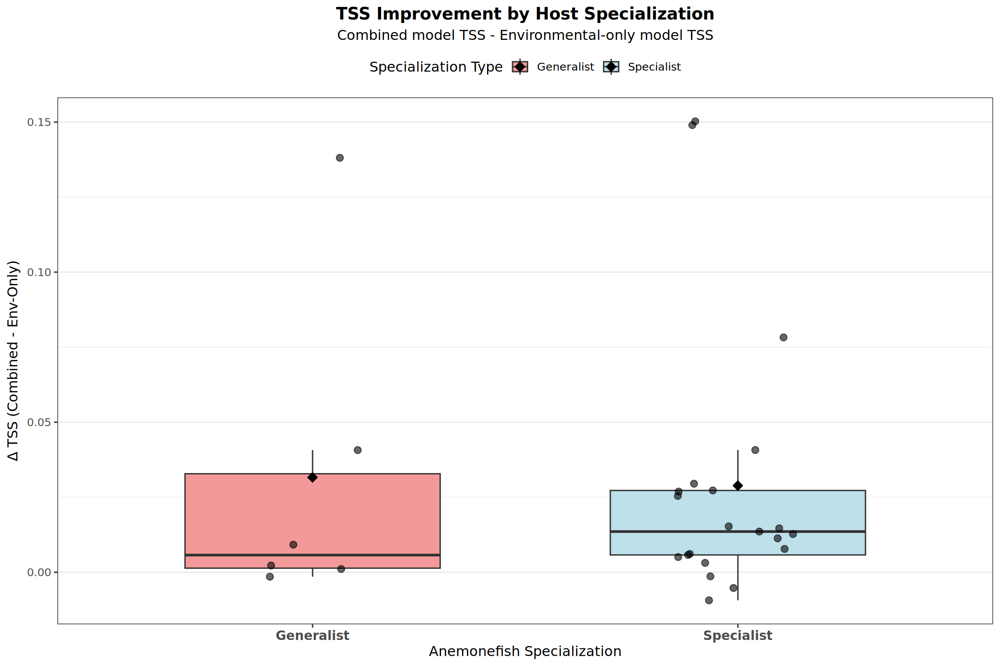
Saved TSS improvement by specialization plot to: /home/bi-server-kyoto/a0236995/sdm_anemonefish/figure_files/tss_improvement_by_specialization.png
Compare anemonefish model performance
This section statistically compares the performance (test AUC) of the different anemonefish model types (environmental-only, biotic-only, combined host+environment) using a linear mixed model. It also visualizes these comparisons.
library(glmmTMB)library(ggplot2)library(dplyr)library(stringr)library(knitr) # For kable# library(performance) # Optional, for model_performance() if needed later# Ensure dplyr, stringr, knitr are loaded if you use them later in the chunk for the summary table# pacman::p_load(dplyr, stringr, knitr) # Or ensure they are loaded in setupif (!is.null(df_fish_comparison) &&nrow(df_fish_comparison) >0&&"AUC_test_CV"%in%names(df_fish_comparison) &&"TSS_test_CV"%in%names(df_fish_comparison)) {# Ensure model_type is a factor for the GLMM# This assumes your df_fish_comparison$model_type has values like "env_only", "biotic_only", "combined_host_env"# OR if you renamed them in a previous step to "env", "host_env", "host_only", adjust levels accordingly.# For consistency with the ant paper structure and direct comparison to env_only: df_fish_comparison$model_type <-factor(df_fish_comparison$model_type, levels =c("env_only", "combined_host_env", "biotic_only"))# Reference: env_only# Second Coeff: combined_host_env vs env_only# Third Coeff: biotic_only vs env_only# --- Statistical Comparison for AUC_test_CV using GLMM ---cat("\n--- Fitting GLMM to compare AUC_test_CV across model types ---\n") m1_fish_auc <-tryCatch({glmmTMB(AUC_test_CV ~ model_type + (1|species), data = df_fish_comparison) }, error =function(e) {cat("Error fitting GLMM for AUC:", e$message, "\n")NULL })if (!is.null(m1_fish_auc)) {cat("\nSummary of GLMM for AUC_test_CV:\n")print(summary(m1_fish_auc)) }# --- Statistical Comparison for TSS_test_CV using GLMM ---cat("\n--- Fitting GLMM to compare TSS_test_CV across model types ---\n") m1_fish_tss <-tryCatch({glmmTMB(TSS_test_CV ~ model_type + (1|species), data = df_fish_comparison) }, error =function(e) {cat("Error fitting GLMM for TSS:", e$message, "\n")NULL })if (!is.null(m1_fish_tss)) {cat("\nSummary of GLMM for TSS_test_CV:\n")print(summary(m1_fish_tss)) }# --- PREPARING DATA FOR PLOTTING --- df_fish_comparison_for_overall_plot <- df_fish_comparison %>%mutate(model_type_display =factor(model_type,levels =c("env_only", "biotic_only", "combined_host_env"), # Order for plot x-axislabels =c("Environmental Only", "Biotic (Host) Only", "Host + Environment"))) # Labels for plot legend df_fish_comparison_plot_species <- df_fish_comparison %>%mutate(species_display =str_replace(species, "_", " "),model_type_display =factor(model_type, # Ensure consistent factor for plottinglevels =c("env_only", "biotic_only", "combined_host_env"),labels =c("Environmental Only", "Biotic (Host) Only", "Host + Environment")))# --- Visualization for AUC_test_CV ---cat("\n--- Generating boxplot of AUC_test_CV by model type ---\n") plot_auc_comparison <-ggplot(df_fish_comparison_for_overall_plot, aes(x = model_type_display, y = AUC_test_CV, fill = model_type_display)) +geom_boxplot(alpha =0.7) +stat_summary(fun = mean, geom ="point", shape =18, size =3, color ="black") +labs(title ="Anemonefish Model Performance Comparison (AUC)",x ="Model Type",y ="AUC (Predictive Accuracy)" ) +scale_fill_manual(values =c("Environmental Only"="grey70", "Biotic (Host) Only"="skyblue", "Host + Environment"="salmon"),name ="Model Type" ) +theme_bw(base_size =12) +theme(panel.grid.major.x =element_blank(),panel.grid.minor.y =element_blank(),legend.position ="bottom",axis.text.x =element_text(size =12),axis.text.y =element_text(size =12) )print(plot_auc_comparison)# Save overall AUC comparison plotif (exists("figure_output_dir") &&dir.exists(figure_output_dir)) { overall_auc_comparison_plot_filename <-file.path(figure_output_dir, "anemonefish_model_auc_comparison_overall.png")ggsave(filename = overall_auc_comparison_plot_filename, plot = plot_auc_comparison, width =8, height =6, units ="in", dpi =300)cat("Saved overall model AUC comparison plot to:", overall_auc_comparison_plot_filename, "\n") } else {cat("Warning: 'figure_output_dir' not defined or does not exist. Overall AUC comparison plot not saved to file.\n") }# Detailed boxplot per species for AUC plot_auc_per_species <-ggplot(df_fish_comparison_plot_species, aes(x = species_display, y = AUC_test_CV, fill = model_type_display)) +geom_boxplot(position =position_dodge(preserve ="single")) +labs(title ="Anemonefish Model Performance by Species and Type (AUC)",x ="Anemonefish Species",y ="AUC (Predictive Accuracy)" ) +scale_fill_manual(values =c("Environmental Only"="grey70", "Biotic (Host) Only"="skyblue", "Host + Environment"="salmon"),name ="Model Type:" ) +theme_bw(base_size =11) +theme(panel.grid.major.x =element_blank(),panel.grid.minor =element_blank(),legend.position ="top",axis.text.x =element_text(angle =60, hjust =1), plot.title =element_text(hjust =0.5),plot.subtitle =element_text(hjust =0.5) ) +ylim(0, 1) print(plot_auc_per_species)# Save per-species AUC comparison plotif (exists("figure_output_dir") &&dir.exists(figure_output_dir)) { per_species_auc_comparison_plot_filename <-file.path(figure_output_dir, "anemonefish_model_auc_comparison_per_species.png")ggsave(filename = per_species_auc_comparison_plot_filename, plot = plot_auc_per_species, width =12, height =8, units ="in", dpi =300) # Increased size for better readabilitycat("Saved per-species model AUC comparison plot to:", per_species_auc_comparison_plot_filename, "\n") } else {cat("Warning: 'figure_output_dir' not defined or does not exist. Per-species AUC comparison plot not saved to file.\n") }# --- Visualization for TSS_test_CV ---cat("\n--- Generating boxplot of TSS_test_CV by model type ---\n") plot_tss_comparison <-ggplot(df_fish_comparison_for_overall_plot, aes(x = model_type_display, y = TSS_test_CV, fill = model_type_display)) +geom_boxplot(alpha =0.7) +stat_summary(fun = mean, geom ="point", shape =18, size =3, color ="black") +labs(title ="Anemonefish Model Performance Comparison (TSS)",x ="Model Type",y ="TSS (Predictive Accuracy)" ) +scale_fill_manual(values =c("Environmental Only"="grey70", "Biotic (Host) Only"="lightgreen", "Host + Environment"="purple"), # New colors for TSSname ="Model Type" ) +theme_bw(base_size =12) +theme(panel.grid.major.x =element_blank(),panel.grid.minor.y =element_blank(),legend.position ="bottom",axis.text.x =element_text(size =12),axis.text.y =element_text(size =12) )print(plot_tss_comparison)# Save overall TSS comparison plotif (exists("figure_output_dir") &&dir.exists(figure_output_dir)) { overall_tss_comparison_plot_filename <-file.path(figure_output_dir, "anemonefish_model_tss_comparison_overall.png")ggsave(filename = overall_tss_comparison_plot_filename, plot = plot_tss_comparison, width =8, height =6, units ="in", dpi =300)cat("Saved overall model TSS comparison plot to:", overall_tss_comparison_plot_filename, "\n") } else {cat("Warning: 'figure_output_dir' not defined or does not exist. Overall TSS comparison plot not saved to file.\n") }# Detailed boxplot per species for TSS plot_tss_per_species <-ggplot(df_fish_comparison_plot_species, aes(x = species_display, y = TSS_test_CV, fill = model_type_display)) +geom_boxplot(position =position_dodge(preserve ="single")) +labs(title ="Anemonefish Model Performance by Species and Type (TSS)",x ="Anemonefish Species",y ="TSS (Predictive Accuracy)" ) +scale_fill_manual(values =c("Environmental Only"="grey70", "Biotic (Host) Only"="lightgreen", "Host + Environment"="purple"), # New colors for TSSname ="Model Type:" ) +theme_bw(base_size =11) +theme(panel.grid.major.x =element_blank(),panel.grid.minor =element_blank(),legend.position ="top",axis.text.x =element_text(angle =60, hjust =1), plot.title =element_text(hjust =0.5),plot.subtitle =element_text(hjust =0.5) ) +ylim(0, 1) # TSS can also range from -1 to 1, but typically 0-1 for good modelsprint(plot_tss_per_species)# Save per-species TSS comparison plotif (exists("figure_output_dir") &&dir.exists(figure_output_dir)) { per_species_tss_comparison_plot_filename <-file.path(figure_output_dir, "anemonefish_model_tss_comparison_per_species.png")ggsave(filename = per_species_tss_comparison_plot_filename, plot = plot_tss_per_species, width =12, height =8, units ="in", dpi =300) # Increased size for better readabilitycat("Saved per-species model TSS comparison plot to:", per_species_tss_comparison_plot_filename, "\n") } else {cat("Warning: 'figure_output_dir' not defined or does not exist. Per-species TSS comparison plot not saved to file.\n") }# --- Summary Table for AUC ---cat("\n--- Mean and Standard Deviation of Test AUC per Anemonefish Species and Model Type ---\n") anemonefish_auc_summary_table <- df_fish_comparison %>%group_by(species, model_type) %>% dplyr::summarize(mean_AUC_test =mean(AUC_test_CV, na.rm =TRUE),sd_AUC_test =sd(AUC_test_CV, na.rm =TRUE),n_CV_folds =n(), .groups ='drop' ) %>%mutate(species_display = stringr::str_replace(species, "_", " ")) %>% dplyr::select(Species = species_display, Model_Type = model_type, Mean_AUC = mean_AUC_test, SD_AUC = sd_AUC_test, N_Folds = n_CV_folds) %>%mutate(Mean_AUC =round(Mean_AUC, 3),SD_AUC =round(SD_AUC, 3)) %>%arrange(Species, Model_Type)if (requireNamespace("knitr", quietly =TRUE) &&nrow(anemonefish_auc_summary_table) >0) {print(knitr::kable(anemonefish_auc_summary_table, caption ="Mean and Standard Deviation of Test AUC for Anemonefish Models by Species and Type.")) } elseif (nrow(anemonefish_auc_summary_table) >0) {print(anemonefish_auc_summary_table) } else {cat("No summary data to print for anemonefish AUC.\n") }# Save AUC summary table to CSVif (exists("analysis_output_dir") &&dir.exists(analysis_output_dir)) { anemonefish_cv_summary_auc_path <-file.path(analysis_output_dir, "anemonefish_detailed_CV_summary_auc.csv")write.csv(anemonefish_auc_summary_table, anemonefish_cv_summary_auc_path, row.names =FALSE)cat("\nAnemonefish detailed CV summary (Mean & SD AUC) saved to:", anemonefish_cv_summary_auc_path, "\n") } else {cat("\nWarning: 'analysis_output_dir' not defined. Anemonefish detailed CV summary (AUC) not saved to CSV.\n") }# --- Summary Table for TSS ---cat("\n--- Mean and Standard Deviation of Test TSS per Anemonefish Species and Model Type ---\n") anemonefish_tss_summary_table <- df_fish_comparison %>%group_by(species, model_type) %>% dplyr::summarize(mean_TSS_test =mean(TSS_test_CV, na.rm =TRUE), # Use TSS_test_CVsd_TSS_test =sd(TSS_test_CV, na.rm =TRUE), # Use TSS_test_CVn_CV_folds =n(), .groups ='drop' ) %>%mutate(species_display = stringr::str_replace(species, "_", " ")) %>% dplyr::select(Species = species_display, Model_Type = model_type, Mean_TSS = mean_TSS_test, SD_TSS = sd_TSS_test, N_Folds = n_CV_folds) %>%# Rename columns for TSSmutate(Mean_TSS =round(Mean_TSS, 3),SD_TSS =round(SD_TSS, 3)) %>%arrange(Species, Model_Type)if (requireNamespace("knitr", quietly =TRUE) &&nrow(anemonefish_tss_summary_table) >0) {print(knitr::kable(anemonefish_tss_summary_table, caption ="Mean and Standard Deviation of Test TSS for Anemonefish Models by Species and Type.")) } elseif (nrow(anemonefish_tss_summary_table) >0) {print(anemonefish_tss_summary_table) } else {cat("No summary data to print for anemonefish TSS.\n") }# Save TSS summary table to CSVif (exists("analysis_output_dir") &&dir.exists(analysis_output_dir)) { anemonefish_cv_summary_tss_path <-file.path(analysis_output_dir, "anemonefish_detailed_CV_summary_tss.csv")write.csv(anemonefish_tss_summary_table, anemonefish_cv_summary_tss_path, row.names =FALSE)cat("\nAnemonefish detailed CV summary (Mean & SD TSS) saved to:", anemonefish_cv_summary_tss_path, "\n") } else {cat("\nWarning: 'analysis_output_dir' not defined. Anemonefish detailed CV summary (TSS) not saved to CSV.\n") }} else {cat("Skipping model comparison as 'df_fish_comparison' is empty or required CV columns (AUC_test_CV, TSS_test_CV) are missing.\n")}
--- Fitting GLMM to compare AUC_test_CV across model types ---
Summary of GLMM for AUC_test_CV:
Family: gaussian ( identity )
Formula: AUC_test_CV ~ model_type + (1 | species)
Data: df_fish_comparison
AIC BIC logLik -2*log(L) df.resid
-3805.3 -3779.7 1907.6 -3815.3 1220
Random effects:
Conditional model:
Groups Name Variance Std.Dev.
species (Intercept) 0.007504 0.08663
Residual 0.002332 0.04830
Number of obs: 1225, groups: species, 27
Dispersion estimate for gaussian family (sigma^2): 0.00233
Conditional model:
Estimate Std. Error z value Pr(>|z|)
(Intercept) 0.894265 0.016873 53.00 < 2e-16 ***
model_typecombined_host_env 0.021677 0.003407 6.36 1.99e-10 ***
model_typebiotic_only -0.012437 0.003395 -3.66 0.000249 ***
---
Signif. codes: 0 '***' 0.001 '**' 0.01 '*' 0.05 '.' 0.1 ' ' 1
--- Fitting GLMM to compare TSS_test_CV across model types ---
Summary of GLMM for TSS_test_CV:
Family: gaussian ( identity )
Formula: TSS_test_CV ~ model_type + (1 | species)
Data: df_fish_comparison
AIC BIC logLik -2*log(L) df.resid
-2609.4 -2583.8 1309.7 -2619.4 1220
Random effects:
Conditional model:
Groups Name Variance Std.Dev.
species (Intercept) 0.008527 0.09234
Residual 0.006309 0.07943
Number of obs: 1225, groups: species, 27
Dispersion estimate for gaussian family (sigma^2): 0.00631
Conditional model:
Estimate Std. Error z value Pr(>|z|)
(Intercept) 0.765913 0.018272 41.92 < 2e-16 ***
model_typecombined_host_env 0.024375 0.005603 4.35 1.36e-05 ***
model_typebiotic_only -0.031895 0.005583 -5.71 1.11e-08 ***
---
Signif. codes: 0 '***' 0.001 '**' 0.01 '*' 0.05 '.' 0.1 ' ' 1
--- Generating boxplot of AUC_test_CV by model type ---
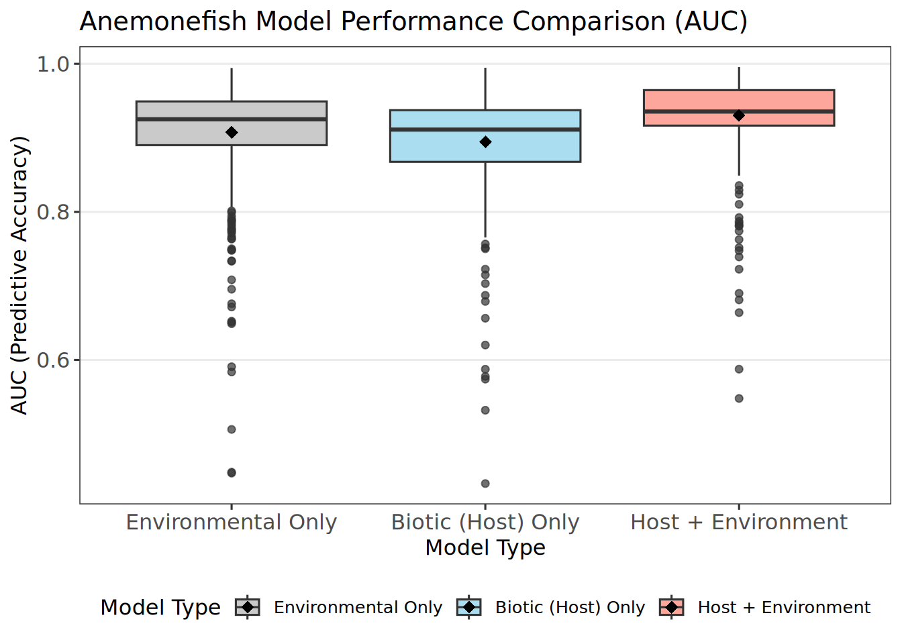
Saved overall model AUC comparison plot to: /home/bi-server-kyoto/a0236995/sdm_anemonefish/figure_files/anemonefish_model_auc_comparison_overall.png
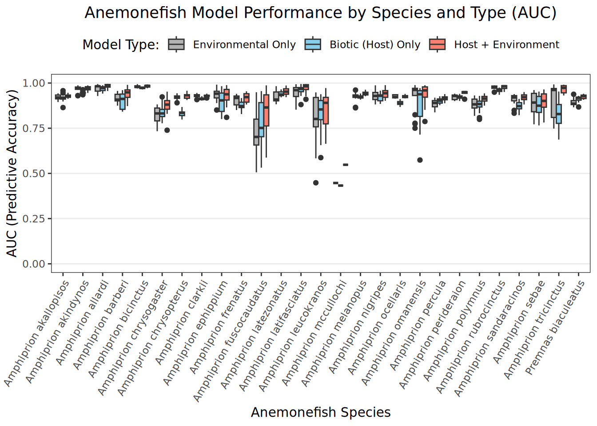
Saved per-species model AUC comparison plot to: /home/bi-server-kyoto/a0236995/sdm_anemonefish/figure_files/anemonefish_model_auc_comparison_per_species.png
--- Generating boxplot of TSS_test_CV by model type ---
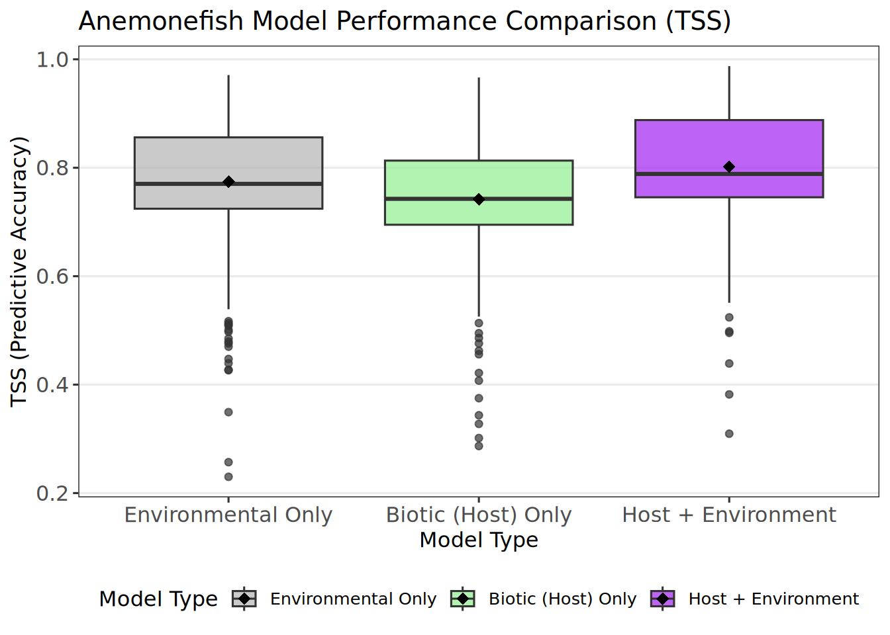
Saved overall model TSS comparison plot to: /home/bi-server-kyoto/a0236995/sdm_anemonefish/figure_files/anemonefish_model_tss_comparison_overall.png
The Impact of Host Specialization on Model Performance
This section builds upon the previous analysis by investigating whether the performance gain from including biotic information is greater for specialist species compared to generalist species. We test this hypothesis using a single mixed-effects model with an interaction term and visualize the results.
# Ensure necessary libraries are loadedlibrary(dplyr)library(ggplot2)library(tidyr)library(stringr)library(lme4)library(lmerTest)library(here) # --- Data Preparation: Re-join specialization data ---# This re-runs the data prep from the old specialization section to ensure the# specialization_type column is present for this model.association_file_path <- here::here("data", "processed_anemonefish_host_associations.csv")host_associations_df <- readr::read_csv(association_file_path, show_col_types =FALSE) %>%mutate(AnemonefishScientificName =gsub(" ", "_", AnemonefishScientificName))anemonefish_host_counts <- host_associations_df %>%group_by(AnemonefishScientificName) %>%summarise(n_hosts =n_distinct(AssociatedAnemoneScientificName), .groups ="drop")anemonefish_specialization_df <- anemonefish_host_counts %>%mutate(specialization_type =factor(ifelse(n_hosts <=3, "Specialist", "Generalist"), levels =c("Generalist", "Specialist"))) %>%rename(species = AnemonefishScientificName)df_comparison_with_specialization <- df_fish_comparison %>%left_join(anemonefish_specialization_df %>% dplyr::select(species, specialization_type, n_hosts), by ="species") %>%filter(!is.na(specialization_type)) %>%group_by(species, model_type) %>%mutate(fold_id =row_number()) %>%ungroup()# --- Filter data for the interaction model ---# We only compare the 'env_only' and 'combined_host_env' models for this hypothesis.df_interaction_data <- df_comparison_with_specialization %>%filter(model_type %in%c("env_only", "combined_host_env")) %>%mutate(model_type =factor(model_type, levels =c("env_only", "combined_host_env")) )# --- Statistical Model 1: Test for interaction on AUC ---cat("\n--- Fitting LMM to test for interaction on AUC_test_CV ---\n")
--- Fitting LMM to test for interaction on AUC_test_CV ---
lmm_auc_interaction <-tryCatch({lmer(AUC_test_CV ~ model_type * specialization_type + (1| species), data = df_interaction_data)}, error =function(e) {cat("Error in LMM for AUC interaction:", e$message, "\n"); NULL})cat("LMM for interaction between model type and specialization type (AUC):\n")
LMM for interaction between model type and specialization type (AUC):
if (!is.null(lmm_auc_interaction)) print(summary(lmm_auc_interaction))
Linear mixed model fit by REML. t-tests use Satterthwaite's method [
lmerModLmerTest]
Formula: AUC_test_CV ~ model_type * specialization_type + (1 | species)
Data: df_interaction_data
REML criterion at convergence: -2540.8
Scaled residuals:
Min 1Q Median 3Q Max
-7.7981 -0.2928 0.0647 0.4257 4.0845
Random effects:
Groups Name Variance Std.Dev.
species (Intercept) 0.006836 0.08268
Residual 0.002140 0.04626
Number of obs: 812, groups: species, 27
Fixed effects:
Estimate Std. Error
(Intercept) 0.937857 0.034058
model_typecombined_host_env 0.015814 0.006530
specialization_typeSpecialist -0.055418 0.038659
model_typecombined_host_env:specialization_typeSpecialist 0.008092 0.007545
df t value
(Intercept) 20.845020 27.537
model_typecombined_host_env 777.881656 2.422
specialization_typeSpecialist 20.926652 -1.434
model_typecombined_host_env:specialization_typeSpecialist 777.998235 1.072
Pr(>|t|)
(Intercept) <2e-16 ***
model_typecombined_host_env 0.0157 *
specialization_typeSpecialist 0.1665
model_typecombined_host_env:specialization_typeSpecialist 0.2838
---
Signif. codes: 0 '***' 0.001 '**' 0.01 '*' 0.05 '.' 0.1 ' ' 1
Correlation of Fixed Effects:
(Intr) mdl___ spcl_S
mdl_typcm__ -0.092
spclztn_tyS -0.881 0.081
mdl_ty__:_S 0.080 -0.865 -0.095
# --- Statistical Model 2: Test for interaction on TSS ---cat("\n--- Fitting LMM to test for interaction on TSS_test_CV ---\n")
--- Fitting LMM to test for interaction on TSS_test_CV ---
lmm_tss_interaction <-tryCatch({lmer(TSS_test_CV ~ model_type * specialization_type + (1| species), data = df_interaction_data)}, error =function(e) {cat("Error in LMM for TSS interaction:", e$message, "\n"); NULL})cat("LMM for interaction between model type and specialization type (TSS):\n")
LMM for interaction between model type and specialization type (TSS):
if (!is.null(lmm_tss_interaction)) print(summary(lmm_tss_interaction))
Linear mixed model fit by REML. t-tests use Satterthwaite's method [
lmerModLmerTest]
Formula: TSS_test_CV ~ model_type * specialization_type + (1 | species)
Data: df_interaction_data
REML criterion at convergence: -1724.4
Scaled residuals:
Min 1Q Median 3Q Max
-5.5888 -0.3172 0.0522 0.4210 3.6871
Random effects:
Groups Name Variance Std.Dev.
species (Intercept) 0.007742 0.08799
Residual 0.006042 0.07773
Number of obs: 812, groups: species, 27
Fixed effects:
Estimate Std. Error
(Intercept) 0.80844 0.03672
model_typecombined_host_env 0.03163 0.01097
specialization_typeSpecialist -0.05348 0.04174
model_typecombined_host_env:specialization_typeSpecialist -0.00912 0.01268
df t value
(Intercept) 21.41649 22.014
model_typecombined_host_env 778.34082 2.882
specialization_typeSpecialist 21.58536 -1.281
model_typecombined_host_env:specialization_typeSpecialist 778.62203 -0.719
Pr(>|t|)
(Intercept) 3.41e-16 ***
model_typecombined_host_env 0.00406 **
specialization_typeSpecialist 0.21371
model_typecombined_host_env:specialization_typeSpecialist 0.47216
---
Signif. codes: 0 '***' 0.001 '**' 0.01 '*' 0.05 '.' 0.1 ' ' 1
Correlation of Fixed Effects:
(Intr) mdl___ spcl_S
mdl_typcm__ -0.144
spclztn_tyS -0.880 0.127
mdl_ty__:_S 0.125 -0.865 -0.148
Saved specialization summary table to: /home/bi-server-kyoto/a0236995/sdm_anemonefish/outputs_for_analysis/anemonefish_specialization_summary_table.csv
Current Environmental Predictors (PCA)
This section loads the Principal Component Analysis (PCA) rasters for the current environmental conditions. These PCA rasters were generated by script 05_preprocess_env_pca_only.R (if PCA was used) and represent the primary environmental gradients used in the SDMs.
if (config$use_pca_predictors) {cat("--- Loading Current Environmental PCA Rasters ---\n")# The rds file stores a list of paths, one for each scenario's PCA .tif fileif (!file.exists(config$pca_raster_paths_rds_path)) {stop("PCA raster paths RDS file not found: ", config$pca_raster_paths_rds_path, "\nPlease ensure script 05 (PCA preprocessing) ran successfully.") } all_pca_raster_paths <-readRDS(config$pca_raster_paths_rds_path) current_pca_path <- all_pca_raster_paths[["current"]]if (is.null(current_pca_path) ||!file.exists(current_pca_path)) {stop("Path for 'current' PCA raster not found in RDS or file does not exist: ", current_pca_path %||%"NULL") } env_pca_current <-tryCatch({ terra::rast(current_pca_path) }, error =function(e) {cat("Error loading current PCA raster from:", current_pca_path, "\nError:", e$message, "\n")NULL })if (!is.null(env_pca_current)) {names(env_pca_current) <-paste0("Current Environmental PC", 1:terra::nlyr(env_pca_current)) # Ensure standard namescat("Loaded current environmental PCA rasters. Layers:", paste(names(env_pca_current), collapse=", "), "\n")# Crop if configured (should match how other current rasters were handled)if (config$apply_indo_pacific_crop) { ip_extent <- terra::ext(config$indo_pacific_bbox) env_pca_current_cropped <- terra::crop(env_pca_current, ip_extent)plot(env_pca_current_cropped) } else { env_pca_current_cropped <- env_pca_current # Use uncropped if not configuredplot(env_pca_current_cropped) } } else {cat("Error: Could not load current environmental PCA rasters.\n") env_pca_current_cropped <-NULL }} else {cat("--- PCA predictors not used. Skipping loading of current PCA rasters. ---\n")cat(" You might need to load your VIF-selected current environmental rasters here if needed for specific analyses.\n") env_pca_current_cropped <-NULL# Ensure this object exists as NULL if PCA not used}
--- Loading Current Environmental PCA Rasters ---
Loaded current environmental PCA rasters. Layers: Current Environmental PC1, Current Environmental PC2, Current Environmental PC3, Current Environmental PC4
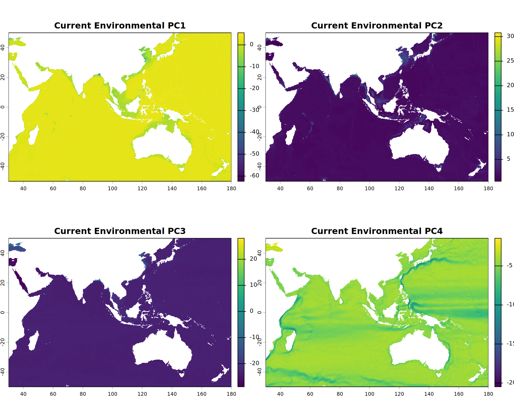
Future Species Richness Projections
This section loads the predicted future suitability rasters for host sea anemones and anemonefish (from environmental-only models) for each future scenario and time step, and calculates the summed richness.
# Define the future scenarios and time steps from your config# Your config$env_scenarios already includes "current", so we filter that outfuture_scenarios_to_load <- config$env_scenarios[config$env_scenarios !="current"]if (length(future_scenarios_to_load) ==0) {cat("No future scenarios defined in config$env_scenarios to load predictions for.\n")}# Lists to store the summed richness rasters for each future scenariohost_richness_future_list <-list()fish_richness_future_list <-list()# --- Create subdirectory for these specific future richness maps ---# This assumes figure_output_dir is defined in your setup chunkfuture_richness_maps_subdir <-NULLif (exists("figure_output_dir") &&dir.exists(figure_output_dir)) { future_richness_maps_subdir <-file.path(figure_output_dir, "future_richness_projections")if (!dir.exists(future_richness_maps_subdir)) {dir.create(future_richness_maps_subdir, recursive =TRUE)cat("Created subdirectory for future richness maps at:", future_richness_maps_subdir, "\n") }} else {cat("Warning: 'figure_output_dir' not defined or does not exist. Future richness maps will not be saved to file.\n")}# Loop through each future scenariofor (scenario_name in future_scenarios_to_load) {cat("\n--- Processing Future Scenario:", scenario_name, "---\n")# --- 1. Load Host Sea Anemone Future Predictions ---# [cite_start]Host models were built using environmental predictors (PCAs) [cite: 145] predictor_suffix_anemone <-"_pca"cat(" Loading Host Sea Anemone predictions for", scenario_name, "\n") host_future_raster_files <-c()for (i in1:nrow(anemone_species_df)) { sp_name_sanitized <-gsub(" ", "_", anemone_species_df$scientificName[i]) pred_file_path <-construct_mean_prediction_filename(species_name_sanitized = sp_name_sanitized,scenario_name = scenario_name,predictor_type_suffix = predictor_suffix_anemone,config = config )if (file.exists(pred_file_path)) { host_future_raster_files <-c(host_future_raster_files, pred_file_path) } else {cat(" Warning: Host prediction file not found for", sp_name_sanitized, "in", scenario_name, "at", pred_file_path, "\n") } }if (length(host_future_raster_files) >0) { host_pred_stack_future <- terra::rast(host_future_raster_files) host_richness_sum_future <-sum(host_pred_stack_future, na.rm =TRUE)if (config$apply_indo_pacific_crop) { ip_extent <- terra::ext(config$indo_pacific_bbox) host_richness_future_list[[scenario_name]] <- terra::crop(host_richness_sum_future, ip_extent) } else { host_richness_future_list[[scenario_name]] <- host_richness_sum_future }cat(" Processed host anemone richness for", scenario_name, "\n") } else {cat(" Warning: No host prediction files found for scenario", scenario_name, "\n") host_richness_future_list[[scenario_name]] <-NULL }# --- 2. Load Anemonefish (Combined) Future Predictions ---# [cite_start]Based on Hypothesis 1 results, combined models are the best performers for anemonefish[cite: 22, 156]. predictor_suffix_anemonefish <-"_combined_pca"# predictor_suffix_anemonefish <- "_env_only"cat(" Loading Anemonefish (Combined) predictions for", scenario_name, "\n") fish_future_raster_files <-c()for (i in1:nrow(anemonefish_species_df)) { sp_name_sanitized <-gsub(" ", "_", anemonefish_species_df$scientificName[i]) pred_file_path <-construct_mean_prediction_filename(species_name_sanitized = sp_name_sanitized,scenario_name = scenario_name,predictor_type_suffix = predictor_suffix_anemonefish,config = config )if (file.exists(pred_file_path)) { fish_future_raster_files <-c(fish_future_raster_files, pred_file_path) } else {cat(" Warning: Anemonefish (Combined) prediction file not found for", sp_name_sanitized, "in", scenario_name, "at", pred_file_path, "\n") } }if (length(fish_future_raster_files) >0) { fish_pred_stack_future <- terra::rast(fish_future_raster_files) fish_richness_sum_future <-sum(fish_pred_stack_future, na.rm =TRUE)if (config$apply_indo_pacific_crop) { ip_extent <- terra::ext(config$indo_pacific_bbox) fish_richness_future_list[[scenario_name]] <- terra::crop(fish_richness_sum_future, ip_extent) } else { fish_richness_future_list[[scenario_name]] <- fish_richness_sum_future }cat(" Processed anemonefish (Combined) richness for", scenario_name, "\n") } else {cat(" Warning: No anemonefish (Combined) prediction files found for scenario", scenario_name, "\n") fish_richness_future_list[[scenario_name]] <-NULL }} # End loop through future scenarios
--- Processing Future Scenario: ssp119_2050 ---
Loading Host Sea Anemone predictions for ssp119_2050
Processed host anemone richness for ssp119_2050
Loading Anemonefish (Combined) predictions for ssp119_2050
Warning: Anemonefish (Combined) prediction file not found for Amphiprion_pacificus in ssp119_2050 at /home/bi-server-kyoto/a0236995/sdm_anemonefish/data/output/predictions/Future/ssp119/1-pred_Amphiprion_pacificus_ssp119_dec50_combined_pca.tif
Processed anemonefish (Combined) richness for ssp119_2050
--- Processing Future Scenario: ssp119_2100 ---
Loading Host Sea Anemone predictions for ssp119_2100
Processed host anemone richness for ssp119_2100
Loading Anemonefish (Combined) predictions for ssp119_2100
Warning: Anemonefish (Combined) prediction file not found for Amphiprion_pacificus in ssp119_2100 at /home/bi-server-kyoto/a0236995/sdm_anemonefish/data/output/predictions/Future/ssp119/1-pred_Amphiprion_pacificus_ssp119_dec100_combined_pca.tif
Processed anemonefish (Combined) richness for ssp119_2100
--- Processing Future Scenario: ssp585_2050 ---
Loading Host Sea Anemone predictions for ssp585_2050
Processed host anemone richness for ssp585_2050
Loading Anemonefish (Combined) predictions for ssp585_2050
Warning: Anemonefish (Combined) prediction file not found for Amphiprion_pacificus in ssp585_2050 at /home/bi-server-kyoto/a0236995/sdm_anemonefish/data/output/predictions/Future/ssp585/1-pred_Amphiprion_pacificus_ssp585_dec50_combined_pca.tif
Processed anemonefish (Combined) richness for ssp585_2050
--- Processing Future Scenario: ssp585_2100 ---
Loading Host Sea Anemone predictions for ssp585_2100
Processed host anemone richness for ssp585_2100
Loading Anemonefish (Combined) predictions for ssp585_2100
Warning: Anemonefish (Combined) prediction file not found for Amphiprion_pacificus in ssp585_2100 at /home/bi-server-kyoto/a0236995/sdm_anemonefish/data/output/predictions/Future/ssp585/1-pred_Amphiprion_pacificus_ssp585_dec100_combined_pca.tif
Processed anemonefish (Combined) richness for ssp585_2100
cat("\n--- Future species prediction loading and processing finished. ---\n")
--- Future species prediction loading and processing finished. ---
# --- Final Plots Comparison and Saving ---cat("\n--- Generating and Saving Final Richness Comparison Plots ---\n")
--- Generating and Saving Final Richness Comparison Plots ---
# Define plot parameters (no longer needed by the helper, but kept for reference)png_width_map <-1000png_height_map <-750png_res_map <-100# MODIFIED Helper function to use the new ggplot-based plotting functionplot_and_save_richness_map <-function(raster_obj, main_title, filename_base, subdir) {if (!is.null(raster_obj)) {# --- Normalization for consistent color scale --- max_val <-global(raster_obj, "max", na.rm =TRUE)$max# Handle case where raster is all 0s or NAs richness_normalized <-if(!is.na(max_val) && max_val >0) raster_obj / max_val else raster_obj# --- Create plot using the ggplot function ---# This assumes `plot_prediction_map` and `world_map_sf` are defined in a previous chunk the_plot <-plot_prediction_map(prediction_raster = richness_normalized,species_name = main_title,world_basemap = world_map_sf )# --- Display plot in RMarkdown output ---print(the_plot)# --- Save the plot to file ---# This keeps your original file naming and location logicif (!is.null(subdir) &&dir.exists(subdir)) {# We add "_ggplot" to the filename to distinguish from potential old plots plot_filename <-file.path(subdir, paste0(filename_base, "_ggplot.png"))# Use ggsave for ggplot objectsggsave(plot_filename, plot = the_plot, width =10, height =7, dpi =300, bg ="white")cat(" Plot saved to:", plot_filename, "\n") } else {cat(" Warning: Output subdirectory '", subdir, "' for plot '", filename_base, "' not available. Plot not saved to file.\n") } } else {cat(" Skipping plot for '", main_title, "' as raster object is NULL.\n") }}# Plot current richness maps first (assuming host_richness_sum_cropped and fish_richness_sum_cropped are from a previous chunk)if(exists("host_richness_sum_cropped")){plot_and_save_richness_map( host_richness_sum_cropped,"Host Richness - Current","host_richness_current", future_richness_maps_subdir )}
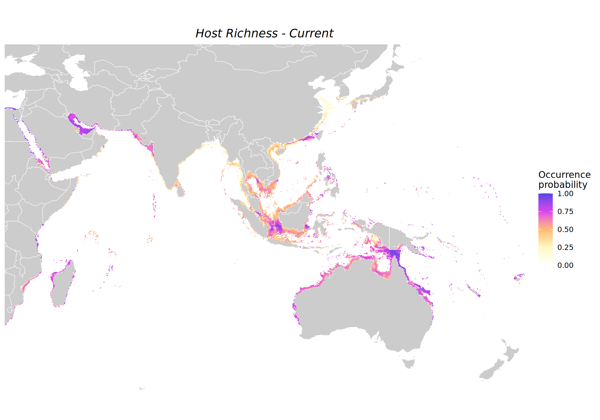
Plot saved to: /home/bi-server-kyoto/a0236995/sdm_anemonefish/figure_files/future_richness_projections/host_richness_current_ggplot.png
# The current richness map for anemonefish should also be based on the Combined model for consistency,# but your current code loads env-only, which is fine for showing the difference.if(exists("fish_richness_sum_cropped")){# NOTE: This plot still uses the old env-only richness for the CURRENT scenario, which is a fine choice for showing the contrast with future predictions from the COMBINED model.# If you want to use the combined model here too, you would need to add a load step for the combined richness maps for the current scenario.plot_and_save_richness_map( fish_richness_sum_cropped,"Anemonefish (Combined) Richness - Current","fish_richness_combined_current", future_richness_maps_subdir )}
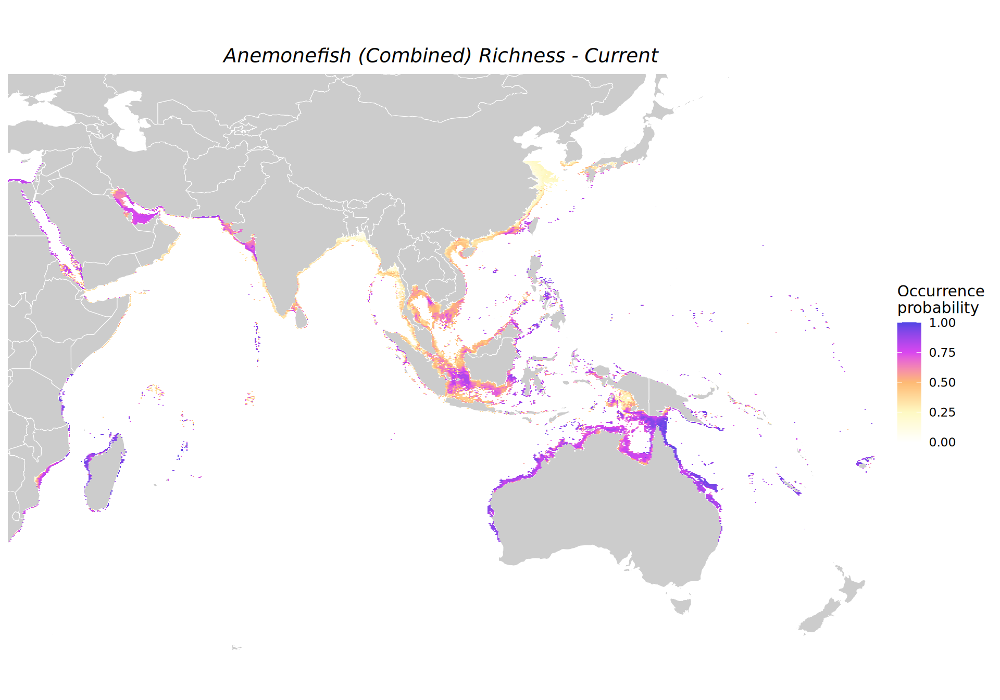
Plot saved to: /home/bi-server-kyoto/a0236995/sdm_anemonefish/figure_files/future_richness_projections/fish_richness_combined_current_ggplot.png
# Iterate through the scenarios you want for the final plot gridscenarios_for_grid_plot <-c("ssp119_2050", "ssp119_2100", "ssp585_2050", "ssp585_2100")for (scen_name in scenarios_for_grid_plot) {# Host plotsif (scen_name %in%names(host_richness_future_list)) {plot_and_save_richness_map( host_richness_future_list[[scen_name]],paste("Host Richness -", scenario_label_converter[scen_name]),paste0("host_richness_", scen_name), future_richness_maps_subdir ) }# Fish plotsif (scen_name %in%names(fish_richness_future_list)) {plot_and_save_richness_map( fish_richness_future_list[[scen_name]],paste("Anemonefish (Combined) Richness -", scenario_label_converter[scen_name]),paste0("fish_richness_combined_", scen_name), future_richness_maps_subdir ) }}
Plot saved to: /home/bi-server-kyoto/a0236995/sdm_anemonefish/figure_files/future_richness_projections/host_richness_ssp119_2050_ggplot.png
Plot saved to: /home/bi-server-kyoto/a0236995/sdm_anemonefish/figure_files/future_richness_projections/fish_richness_combined_ssp119_2050_ggplot.png
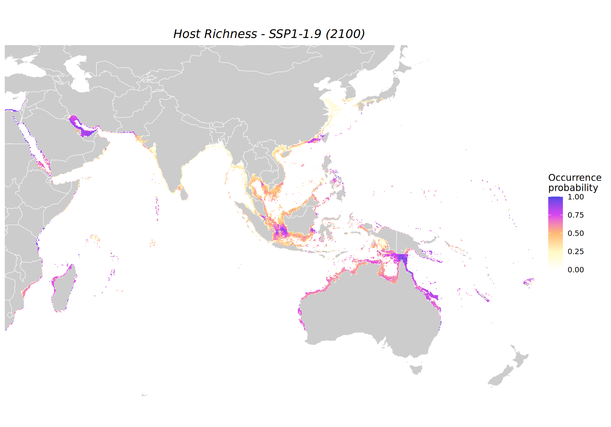
Plot saved to: /home/bi-server-kyoto/a0236995/sdm_anemonefish/figure_files/future_richness_projections/host_richness_ssp119_2100_ggplot.png
Plot saved to: /home/bi-server-kyoto/a0236995/sdm_anemonefish/figure_files/future_richness_projections/fish_richness_combined_ssp119_2100_ggplot.png
Plot saved to: /home/bi-server-kyoto/a0236995/sdm_anemonefish/figure_files/future_richness_projections/host_richness_ssp585_2050_ggplot.png
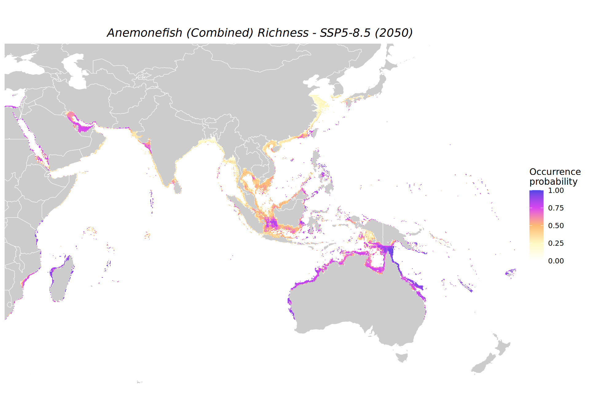
Plot saved to: /home/bi-server-kyoto/a0236995/sdm_anemonefish/figure_files/future_richness_projections/fish_richness_combined_ssp585_2050_ggplot.png
Plot saved to: /home/bi-server-kyoto/a0236995/sdm_anemonefish/figure_files/future_richness_projections/host_richness_ssp585_2100_ggplot.png
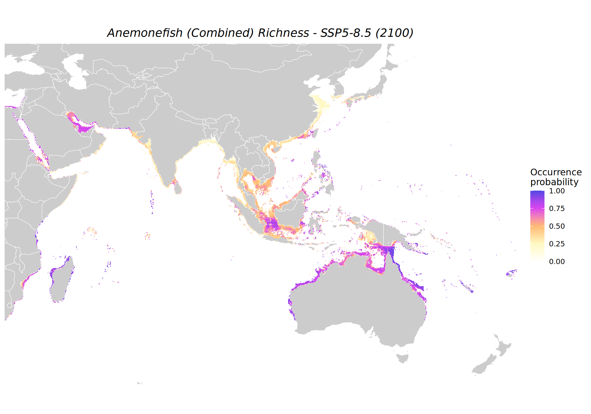
Plot saved to: /home/bi-server-kyoto/a0236995/sdm_anemonefish/figure_files/future_richness_projections/fish_richness_combined_ssp585_2100_ggplot.png
cat("\n--- Finished generating final richness comparison plots. ---\n")
--- Finished generating final richness comparison plots. ---
Future Environmental Predictors (PCA)
This section loads the PCA rasters for the future environmental conditions, corresponding to each future scenario and time step.
if (config$use_pca_predictors) {cat("--- Loading Future Environmental PCA Rasters ---\n")if (!exists("all_pca_raster_paths") ||is.null(all_pca_raster_paths)) {cat("Warning: 'all_pca_raster_paths' not found from previous chunk. Attempting to reload.\n")if (!file.exists(config$pca_raster_paths_rds_path)) {stop("PCA raster paths RDS file not found: ", config$pca_raster_paths_rds_path) } all_pca_raster_paths <-readRDS(config$pca_raster_paths_rds_path) } env_pca_future_list <-list()for (scenario_name in future_scenarios_to_load) { # future_scenarios_to_load from previous chunkcat(" Loading PCA for future scenario:", scenario_name, "\n") future_pca_path <- all_pca_raster_paths[[scenario_name]]if (is.null(future_pca_path) ||!file.exists(future_pca_path)) {cat(" Warning: Path for PCA raster not found for scenario:", scenario_name, "Path:", future_pca_path %||%"NULL", "\n")next } env_pca_future_scenario <-tryCatch({ terra::rast(future_pca_path) }, error =function(e) {cat(" Error loading PCA raster for", scenario_name, "from:", future_pca_path, "\nError:", e$message, "\n")NULL })if (!is.null(env_pca_future_scenario)) {names(env_pca_future_scenario) <-paste0("Future Environmental PC", 1:terra::nlyr(env_pca_future_scenario), " - ", scenario_label_converter[scenario_name]) # Ensure standard namesif (config$apply_indo_pacific_crop) { ip_extent <- terra::ext(config$indo_pacific_bbox) env_pca_future_list[[scenario_name]] <- terra::crop(env_pca_future_scenario, ip_extent) } else { env_pca_future_list[[scenario_name]] <- env_pca_future_scenario }cat(" Loaded and processed PCA for", scenario_name, ". Layers:", paste(names(env_pca_future_list[[scenario_name]]), collapse=", "), "\n")plot(env_pca_future_list[[scenario_name]]) } }# # Example: Plot one of the future PCA stacks# if (length(env_pca_future_list) > 0 && "ssp119_2050" %in% names(env_pca_future_list)) {# plot(env_pca_future_list[["ssp119_2050"]], main = "Future Env PCA - SSP1-1.9 (2050) - Cropped")# }} else {cat("--- PCA predictors not used. Skipping loading of future PCA rasters. ---\n")cat(" You might need to load your VIF-selected future environmental rasters here if needed for specific analyses.\n") env_pca_future_list <-NULL# Ensure this object exists as NULL}
# The following objects are now available for subsequent analyses:# - env_pca_current_cropped: SpatRaster of current PCA env predictors# - host_richness_future_list: List of SpatRasters for host future richness, named by scenario# - fish_richness_future_list: List of SpatRasters for anemonefish (combined) future richness, named by scenario# - env_pca_future_list: List of SpatRasters for future PCA env predictors, named by scenario
Environmental Shifts (PCA Components)
This section examines the projected changes in the principal environmental gradients (PCA components) between the current conditions and future climate scenarios. This helps understand how the fundamental environmental space is predicted to change.
if (!config$use_pca_predictors) {cat("PCA predictors not used in this configuration. Skipping PCA environmental shift analysis.\n")} else {if (is.null(env_pca_current_cropped) ||is.null(env_pca_future_list) ||length(env_pca_future_list) ==0) {cat("Warning: Current or future PCA environmental rasters are not available. Cannot calculate shifts.\n") } else {cat("--- Calculating and Plotting Shifts in PCA Environmental Gradients ---\n")# Ensure current PCA stack is SpatRaster for subtraction current_pca_terra <-if(inherits(env_pca_current_cropped, "SpatRaster")) env_pca_current_cropped else terra::rast(env_pca_current_cropped)for (scenario_name innames(env_pca_future_list)) {if (scenario_name =="current") {next }cat(" Processing shifts for scenario:", scenario_name, "\n") future_pca_stack <- env_pca_future_list[[scenario_name]]if (is.null(future_pca_stack)) {cat(" Skipping scenario", scenario_name, "- future PCA stack is NULL.\n")next }# Ensure layers match for subtraction (e.g., up to n_pca_components)# It's crucial that both current and future PCA stacks were generated with the same number of components# and represent the same underlying variables in the same order before PCA.# If layer names don't match exactly but number of layers does for the first N components:if (terra::nlyr(current_pca_terra) >= config$n_pca_components && terra::nlyr(future_pca_stack) >= config$n_pca_components) {# Select the first N components (defined in config) current_pca_subset <- current_pca_terra[[1:config$n_pca_components]] future_pca_subset <- future_pca_stack[[1:config$n_pca_components]]names(current_pca_subset) <-paste0("PC", 1:config$n_pca_components) # Standardize names for safetynames(future_pca_subset) <-paste0("PC", 1:config$n_pca_components)# Calculate the difference (shift)# terra::`-.SpatRaster` works element-wise if names match or by layer order if names don't.# Better to ensure consistent naming (done above) env_shift_scenario <- future_pca_subset - current_pca_subset names(env_shift_scenario) <-paste0("Environmental PC", 1:config$n_pca_components, " Shifts (Future - Current): ", scenario_label_converter[scenario_name])cat(" Calculated PCA shifts for scenario:", scenario_name, "\n")plot(env_shift_scenario, nc =2) } else {cat(" Warning: Layer mismatch or insufficient layers for PCA shift calculation in scenario", scenario_name, "\n")cat(" Current PCA layers:", terra::nlyr(current_pca_terra), " Future PCA layers:", terra::nlyr(future_pca_stack), " Needed:", config$n_pca_components, "\n") } } }}
--- Calculating and Plotting Shifts in PCA Environmental Gradients ---
Processing shifts for scenario: ssp119_2050
Calculated PCA shifts for scenario: ssp119_2050
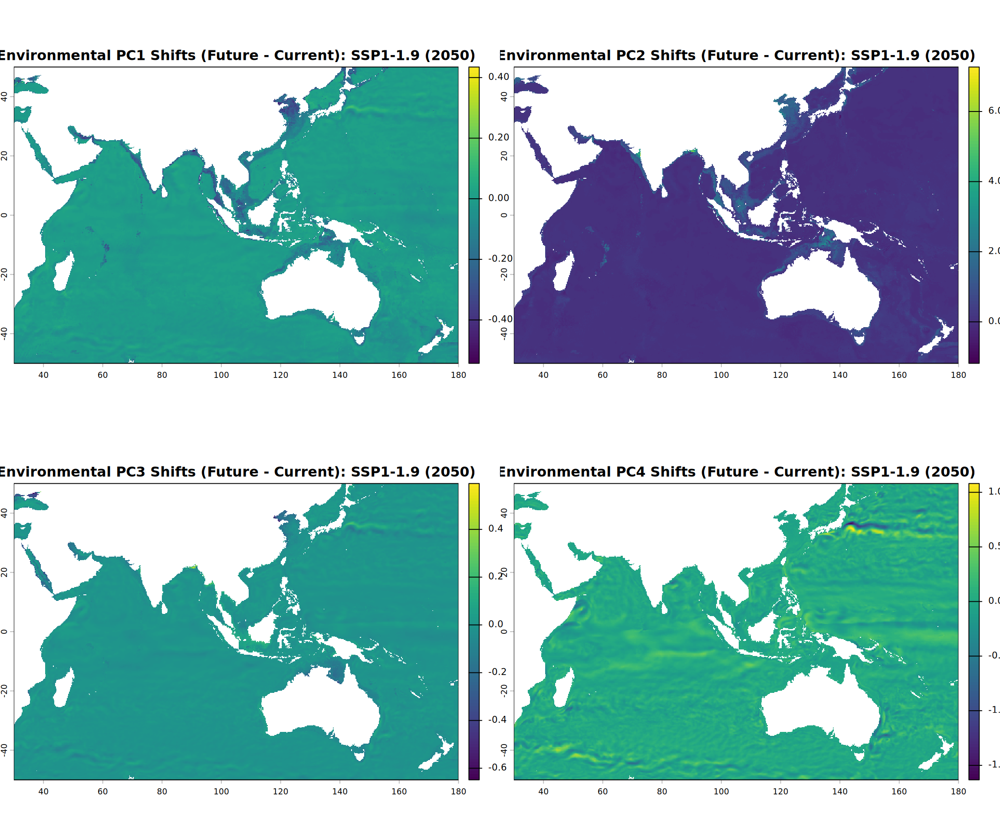
Processing shifts for scenario: ssp119_2100
Calculated PCA shifts for scenario: ssp119_2100
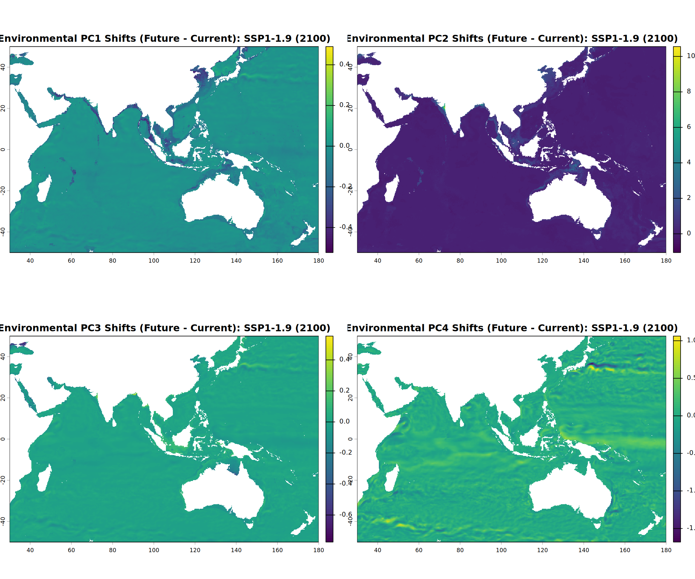
Processing shifts for scenario: ssp585_2050
Calculated PCA shifts for scenario: ssp585_2050
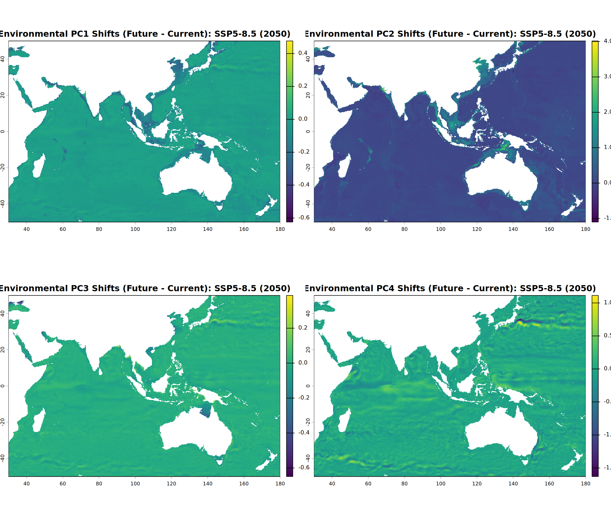
Processing shifts for scenario: ssp585_2100
Calculated PCA shifts for scenario: ssp585_2100
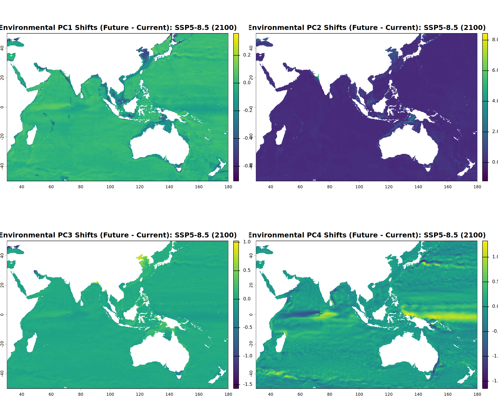
Load Future Individual Species Prediction Rasters
This section loads the individual species prediction rasters for host sea anemones and anemonefish (combined models) for each future scenario. These are needed for calculating Schoener’s D overlap and individual suitability shifts.
# future_scenarios_to_load was defined in the "Future Species Richness Projections" chunkif (!exists("future_scenarios_to_load")) { future_scenarios_to_load <- config$env_scenarios[config$env_scenarios !="current"]}# --- Set predictor suffixes for the correct model types ---# Host models are based on environmental-only predictorspredictor_suffix_anemone_env <-"_pca"# Anemonefish models, for this analysis, should be the best-performing 'combined' modelspredictor_suffix_anemonefish_combined <-"_combined_pca"# NEW: Suffix for fish environmental-only modelspredictor_suffix_anemonefish_env <-"_pca"host_pred_stacks_future_individual <-list()fish_pred_stacks_future_individual <-list()# NEW: List to store future Env-Only fish predictionsfish_pred_stacks_future_env_only <-list()for (scenario_name in future_scenarios_to_load) {cat("\n--- Loading individual future predictions for Scenario:", scenario_name, "---\n")# --- Host Anemones (Environmental-Only models) --- current_host_future_files <-c() current_host_future_names <-c()if (exists("anemone_species_df") &&nrow(anemone_species_df) >0) {for (i in1:nrow(anemone_species_df)) { sp_name_sanitized <-gsub(" ", "_", anemone_species_df$scientificName[i]) pred_file_path <-construct_mean_prediction_filename(species_name_sanitized = sp_name_sanitized,scenario_name = scenario_name,predictor_type_suffix = predictor_suffix_anemone_env,config = config )if (file.exists(pred_file_path)) { current_host_future_files <-c(current_host_future_files, pred_file_path) current_host_future_names <-c(current_host_future_names, sp_name_sanitized) } else {cat(" Warning: Host future prediction file not found for", sp_name_sanitized, "in", scenario_name, "\n") } }if (length(current_host_future_files) >0) { temp_stack <- terra::rast(current_host_future_files)names(temp_stack) <- current_host_future_namesif (config$apply_indo_pacific_crop) { ip_extent <- terra::ext(config$indo_pacific_bbox) host_pred_stacks_future_individual[[scenario_name]] <- terra::crop(temp_stack, ip_extent) } else { host_pred_stacks_future_individual[[scenario_name]] <- temp_stack }cat(" Loaded and cropped", terra::nlyr(host_pred_stacks_future_individual[[scenario_name]]), "host future predictions for", scenario_name, "\n") } else { host_pred_stacks_future_individual[[scenario_name]] <-NULLcat(" No host future prediction files found for", scenario_name, "\n") } }# --- Anemonefish (Combined models) --- current_fish_future_files <-c() current_fish_future_names <-c()if (exists("anemonefish_species_df") &&nrow(anemonefish_species_df) >0) {for (i in1:nrow(anemonefish_species_df)) { sp_name_sanitized <-gsub(" ", "_", anemonefish_species_df$scientificName[i]) pred_file_path <-construct_mean_prediction_filename(species_name_sanitized = sp_name_sanitized,scenario_name = scenario_name,predictor_type_suffix = predictor_suffix_anemonefish_combined,config = config )if (file.exists(pred_file_path)) { current_fish_future_files <-c(current_fish_future_files, pred_file_path) current_fish_future_names <-c(current_fish_future_names, sp_name_sanitized) } else {cat(" Warning: Anemonefish (Combined) future prediction file not found for", sp_name_sanitized, "in", scenario_name, "\n") } }if (length(current_fish_future_files) >0) { temp_stack_fish <- terra::rast(current_fish_future_files)names(temp_stack_fish) <- current_fish_future_namesif (config$apply_indo_pacific_crop) { ip_extent <- terra::ext(config$indo_pacific_bbox) fish_pred_stacks_future_individual[[scenario_name]] <- terra::crop(temp_stack_fish, ip_extent) } else { fish_pred_stacks_future_individual[[scenario_name]] <- temp_stack_fish }cat(" Loaded and cropped", terra::nlyr(fish_pred_stacks_future_individual[[scenario_name]]), "anemonefish (Combined) future predictions for", scenario_name, "\n") } else { fish_pred_stacks_future_individual[[scenario_name]] <-NULLcat(" No anemonefish (Combined) future prediction files found for", scenario_name, "\n") } }}
--- Loading individual future predictions for Scenario: ssp119_2050 ---
Loaded and cropped 10 host future predictions for ssp119_2050
Warning: Anemonefish (Combined) future prediction file not found for Amphiprion_pacificus in ssp119_2050
Loaded and cropped 26 anemonefish (Combined) future predictions for ssp119_2050
--- Loading individual future predictions for Scenario: ssp119_2100 ---
Loaded and cropped 10 host future predictions for ssp119_2100
Warning: Anemonefish (Combined) future prediction file not found for Amphiprion_pacificus in ssp119_2100
Loaded and cropped 26 anemonefish (Combined) future predictions for ssp119_2100
--- Loading individual future predictions for Scenario: ssp585_2050 ---
Loaded and cropped 10 host future predictions for ssp585_2050
Warning: Anemonefish (Combined) future prediction file not found for Amphiprion_pacificus in ssp585_2050
Loaded and cropped 26 anemonefish (Combined) future predictions for ssp585_2050
--- Loading individual future predictions for Scenario: ssp585_2100 ---
Loaded and cropped 10 host future predictions for ssp585_2100
Warning: Anemonefish (Combined) future prediction file not found for Amphiprion_pacificus in ssp585_2100
Loaded and cropped 26 anemonefish (Combined) future predictions for ssp585_2100
# Result: host_pred_stacks_future_individual and fish_pred_stacks_future_individual# are lists of SpatRasters, named by scenario, containing individual species layers.# --- Anemonefish (Environmental-Only models) ---# NEW: Load these to calculate the "Potential Niche" vs "Realized Niche" current_fish_env_files <-c() current_fish_env_names <-c()if (exists("anemonefish_species_df") &&nrow(anemonefish_species_df) >0) {for (i in1:nrow(anemonefish_species_df)) { sp_name_sanitized <-gsub(" ", "_", anemonefish_species_df$scientificName[i])# Construct filename using the ENV suffix pred_file_path <-construct_mean_prediction_filename(species_name_sanitized = sp_name_sanitized,scenario_name = scenario_name,predictor_type_suffix = predictor_suffix_anemonefish_env, # <--- Using ENV suffixconfig = config )if (file.exists(pred_file_path)) { current_fish_env_files <-c(current_fish_env_files, pred_file_path) current_fish_env_names <-c(current_fish_env_names, sp_name_sanitized) } }if (length(current_fish_env_files) >0) { temp_stack_env <- terra::rast(current_fish_env_files)names(temp_stack_env) <- current_fish_env_namesif (config$apply_indo_pacific_crop) { ip_extent <- terra::ext(config$indo_pacific_bbox) fish_pred_stacks_future_env_only[[scenario_name]] <- terra::crop(temp_stack_env, ip_extent) } else { fish_pred_stacks_future_env_only[[scenario_name]] <- temp_stack_env }cat(" Loaded", terra::nlyr(fish_pred_stacks_future_env_only[[scenario_name]]), "anemonefish (Env-Only) future predictions for", scenario_name, "\n") } else { fish_pred_stacks_future_env_only[[scenario_name]] <-NULLcat(" No anemonefish (Env-Only) future prediction files found for", scenario_name, "\n") } }
Loaded 23 anemonefish (Env-Only) future predictions for ssp585_2100
Individual Species Suitability Shifts
This section calculates the mean change in environmental suitability for each individual host sea anemone and anemonefish species between the current period and each future climate scenario. These shift values will be used to explore correlations with niche breadth.
# Prerequisites from previous chunks:# - host_pred_stack_cropped: Current individual host predictions (cropped)# - fish_pred_stack_cropped: Current individual fish (combined) predictions (cropped)# - host_pred_stacks_future_individual: List of future individual host predictions (cropped), named by scenario# - fish_pred_stacks_future_individual: List of future individual fish (combined) predictions (cropped), named by scenario# - future_scenarios_to_load: Vector of future scenario names (e.g., "ssp119_2050", "ssp585_2100")if (!exists("host_pred_stack_cropped") ||!exists("fish_pred_stack_cropped") ||!exists("host_pred_stacks_future_individual") ||!exists("fish_pred_stacks_future_individual") ||!exists("future_scenarios_to_load")) {stop("Prerequisite data for calculating suitability shifts is missing. Ensure previous chunks (loading current and future individual predictions) have run successfully.")}suitability_shifts_list <-list() # Initialize list to store results for all species and scenarioscat("--- Calculating Mean Suitability Shifts for Individual Species ---\n")
--- Calculating Mean Suitability Shifts for Individual Species ---
for (scenario_name_fut in future_scenarios_to_load) {cat("\n Processing Scenario:", scenario_name_fut, "\n")# --- Host Anemones Suitability Shifts ---cat(" Calculating shifts for Host Anemones...\n") current_hosts_for_diff <- host_pred_stack_cropped future_hosts_for_diff_raw <- host_pred_stacks_future_individual[[scenario_name_fut]]if (!is.null(current_hosts_for_diff) &&!is.null(future_hosts_for_diff_raw) && terra::nlyr(current_hosts_for_diff) >0&& terra::nlyr(future_hosts_for_diff_raw) >0) { common_host_species <-intersect(names(current_hosts_for_diff), names(future_hosts_for_diff_raw))if (length(common_host_species) >0) { current_hosts_subset <- current_hosts_for_diff[[common_host_species]] future_hosts_subset_raw <- future_hosts_for_diff_raw[[common_host_species]]# Ensure geometry matches for subtraction by resampling future to current if needed future_hosts_subset_aligned <- future_hosts_subset_rawif(!terra::compareGeom(current_hosts_subset, future_hosts_subset_raw, stopOnError=FALSE, res=TRUE, crs=TRUE, ext=TRUE)){cat(" Resampling future host predictions for scenario '", scenario_name_fut, "' to match current geometry for shift calculation.\n") future_hosts_subset_aligned <-tryCatch( terra::resample(future_hosts_subset_raw, current_hosts_subset, method="bilinear"),error =function(e) {cat(" ERROR resampling future host stack for", scenario_name_fut, ":", e$message, "\n"); NULL } ) }if (!is.null(future_hosts_subset_aligned)) { diff_hosts_scenario_indiv <- future_hosts_subset_aligned - current_hosts_subset mean_shifts_hosts_indiv <-global(diff_hosts_scenario_indiv, "mean", na.rm =TRUE)rownames(mean_shifts_hosts_indiv) <-names(diff_hosts_scenario_indiv) # Should be common_host_species suitability_shifts_list[[paste0("hosts_", scenario_name_fut)]] <- mean_shifts_hosts_indivcat(" Mean suitability shifts for hosts in", scenario_name_fut, "calculated.\n")# print(head(mean_shifts_hosts_indiv)) } } else {cat(" No common host species found between current and future stacks for scenario", scenario_name_fut, "\n") } } else {cat(" Skipping host anemones for scenario", scenario_name_fut, "- current or future individual prediction stack missing or empty.\n") }# --- Anemonefish (Environmental-Only Models) Suitability Shifts ---cat(" Calculating shifts for Anemonefish (Combined)...\n") current_fish_for_diff <- fish_pred_stack_cropped future_fish_for_diff_raw <- fish_pred_stacks_future_individual[[scenario_name_fut]] if (!is.null(current_fish_for_diff) &&!is.null(future_fish_for_diff_raw) && terra::nlyr(current_fish_for_diff) >0&& terra::nlyr(future_fish_for_diff_raw) >0) { common_fish_species <-intersect(names(current_fish_for_diff), names(future_fish_for_diff_raw))if (length(common_fish_species) >0) { current_fish_subset <- current_fish_for_diff[[common_fish_species]] future_fish_subset_raw <- future_fish_for_diff_raw[[common_fish_species]] future_fish_subset_aligned <- future_fish_subset_rawif(!terra::compareGeom(current_fish_subset, future_fish_subset_raw, stopOnError=FALSE, res=TRUE, crs=TRUE, ext=TRUE)){cat(" Resampling future fish (combined) predictions for scenario '", scenario_name_fut, "' to match current geometry.\n") future_fish_subset_aligned <-tryCatch( terra::resample(future_fish_subset_raw, current_fish_subset, method="bilinear"),error =function(e) {cat(" ERROR resampling future fish stack for", scenario_name_fut, ":", e$message, "\n"); NULL } ) }if (!is.null(future_fish_subset_aligned)) { diff_fish_scenario_indiv <- future_fish_subset_aligned - current_fish_subset mean_shifts_fish_indiv <-global(diff_fish_scenario_indiv, "mean", na.rm =TRUE)rownames(mean_shifts_fish_indiv) <-names(diff_fish_scenario_indiv) suitability_shifts_list[[paste0("fish_env_only_", scenario_name_fut)]] <- mean_shifts_fish_indivcat(" Mean suitability shifts for anemonefish (combined) in", scenario_name_fut, "calculated.\n")# print(head(mean_shifts_fish_indiv)) } } else {cat(" No common anemonefish species found between current and future stacks for scenario", scenario_name_fut, "\n") } } else {cat(" Skipping anemonefish (combined) for scenario", scenario_name_fut, "- current or future individual prediction stack missing or empty.\n") }} # End loop through future scenarios
Processing Scenario: ssp119_2050
Calculating shifts for Host Anemones...
Mean suitability shifts for hosts in ssp119_2050 calculated.
Calculating shifts for Anemonefish (Combined)...
Mean suitability shifts for anemonefish (combined) in ssp119_2050 calculated.
Processing Scenario: ssp119_2100
Calculating shifts for Host Anemones...
Mean suitability shifts for hosts in ssp119_2100 calculated.
Calculating shifts for Anemonefish (Combined)...
Mean suitability shifts for anemonefish (combined) in ssp119_2100 calculated.
Processing Scenario: ssp585_2050
Calculating shifts for Host Anemones...
Mean suitability shifts for hosts in ssp585_2050 calculated.
Calculating shifts for Anemonefish (Combined)...
Mean suitability shifts for anemonefish (combined) in ssp585_2050 calculated.
Processing Scenario: ssp585_2100
Calculating shifts for Host Anemones...
Mean suitability shifts for hosts in ssp585_2100 calculated.
Calculating shifts for Anemonefish (Combined)...
Mean suitability shifts for anemonefish (combined) in ssp585_2100 calculated.
cat("\n--- Individual species suitability shift calculations finished. ---\n")
--- Individual species suitability shift calculations finished. ---
# The `suitability_shifts_list` object is now populated.# Example access: suitability_shifts_list[["hosts_ssp119_2050"]]# It will contain data frames with rownames = species_name_sanitized and a column "mean" for the shift.
PLOT SHIFTS
Plotting shifts
library(ggplot2)library(dplyr)library(tidyr)library(stringr)cat("\n--- Generating plot for Mean Suitability Shifts ---\n")
--- Generating plot for Mean Suitability Shifts ---
# --- 1. Combine host and fish suitability shift data ---all_shifts_df <-data.frame()# Process host shiftsfor (scenario innames(suitability_shifts_list)[grepl("^hosts_", names(suitability_shifts_list))]) { shift_df <-as.data.frame(suitability_shifts_list[[scenario]]) shift_df$species <-rownames(shift_df) shift_df$scenario_code <- scenario shift_df$guild <-"Host Anemones" all_shifts_df <-bind_rows(all_shifts_df, shift_df)}# Process fish shiftsfor (scenario innames(suitability_shifts_list)[grepl("^fish_env_only_", names(suitability_shifts_list))]) { shift_df <-as.data.frame(suitability_shifts_list[[scenario]]) shift_df$species <-rownames(shift_df) shift_df$scenario_code <- scenario shift_df$guild <-"Anemonefish (Env-Only)" all_shifts_df <-bind_rows(all_shifts_df, shift_df)}# --- 2. Clean and prepare data for plotting ---if (nrow(all_shifts_df) >0) {# Add cleaner scenario labels for the plot all_shifts_df <- all_shifts_df %>%mutate(scenario_display =str_replace(scenario_code, "hosts_ssp119_2050", "SSP1-1.9 (2050)"),scenario_display =str_replace(scenario_display, "hosts_ssp119_2100", "SSP1-1.9 (2100)"),scenario_display =str_replace(scenario_display, "hosts_ssp585_2050", "SSP5-8.5 (2050)"),scenario_display =str_replace(scenario_display, "hosts_ssp585_2100", "SSP5-8.5 (2100)"),scenario_display =str_replace(scenario_display, "fish_env_only_ssp119_2050", "SSP1-1.9 (2050)"),scenario_display =str_replace(scenario_display, "fish_env_only_ssp119_2100", "SSP1-1.9 (2100)"),scenario_display =str_replace(scenario_display, "fish_env_only_ssp585_2050", "SSP5-8.5 (2050)"),scenario_display =str_replace(scenario_display, "fish_env_only_ssp585_2100", "SSP5-8.5 (2100)") ) %>%filter(!is.na(mean)) # Remove any species where shift could not be calculated (e.g., NaN)# --- 3. Generate the plot --- plot_mean_shifts <-ggplot(all_shifts_df, aes(x =reorder(species, mean), y = mean, fill = guild)) +geom_bar(stat ="identity", position ="dodge") +coord_flip() +# Flip coordinates to make species names readablelabs(title ="Mean Projected Suitability Shifts for Individual Species",subtitle ="Average change in suitability between future and current conditions",x ="Species",y ="Mean Suitability Shift (Future - Current)" ) +facet_wrap(~ scenario_display, ncol =2) +scale_fill_manual(values =c("Anemonefish (Env-Only)"="cornflowerblue", "Host Anemones"="darkorange")) +theme_minimal(base_size =12) +theme(legend.position ="top",axis.text.y =element_text(face ="italic"),panel.grid.major.y =element_blank(),strip.text =element_text(face ="bold", size =10) )print(plot_mean_shifts)# --- 4. Save the plot ---if (exists("figure_output_dir") &&dir.exists(figure_output_dir)) { plot_filename <-file.path(figure_output_dir, "mean_suitability_shifts_by_species.png")ggsave(plot_filename, plot = plot_mean_shifts, width =12, height =8, dpi =300)cat("Saved plot to:", plot_filename, "\n") }} else {cat("Warning: Not enough data to generate mean suitability shifts plot.\n")}
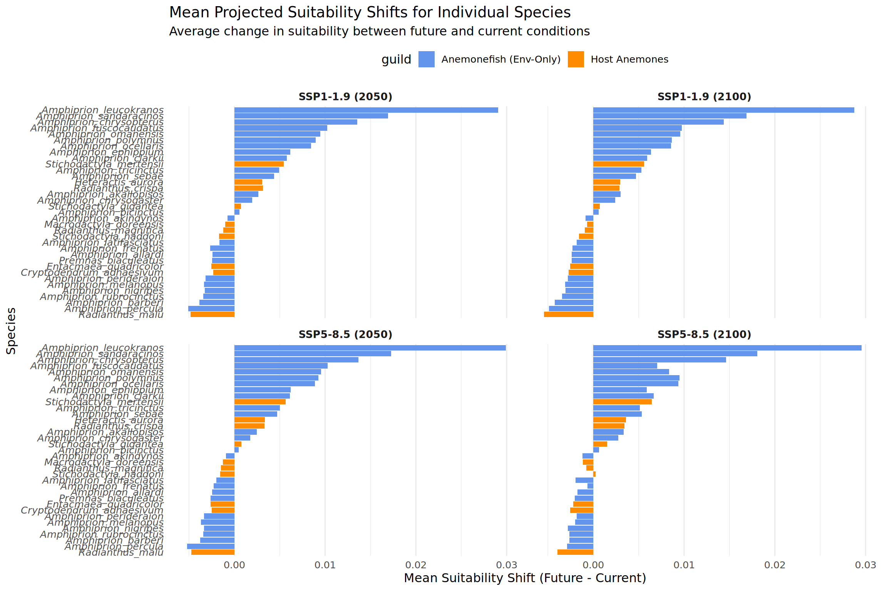
Saved plot to: /home/bi-server-kyoto/a0236995/sdm_anemonefish/figure_files/mean_suitability_shifts_by_species.png
Quantifying and Testing Mutualism Decoupling (Hypothesis 3)
This script calculates the change in geographic overlap (Schoener’s D) between each anemonefish species and its hosts under future climate scenarios. It tests if the mutualism is at risk of spatial decoupling due to differential range shifts, and whether this effect varies by host specialization.
# --- Niche Overlap Analysis for Hypothesis 3 ---# This section quantifies the change in niche overlap (Schoener's D) between# anemonefish and their hosts, and tests for a significant decrease over time.library(dplyr)library(tidyr)library(ggplot2)library(ENMTools) # For niche overlap metrics library(lmerTest) # For statistical testinglibrary(terra) # Ensure terra is loaded for global()cat("\n--- Niche Overlap Analysis for Hypothesis 3 ---\n")
--- Niche Overlap Analysis for Hypothesis 3 ---
# --- 1. Load Host Associations & Specialization Data ---# We'll use the same data preparation as in the specialization analysis sectionassociation_file_path <- here::here("data", "processed_anemonefish_host_associations.csv")if (!file.exists(association_file_path)) {stop("Anemonefish-host association file not found at: ", association_file_path)}host_associations_df <- readr::read_csv(association_file_path, show_col_types =FALSE) %>%mutate(AnemonefishScientificName =gsub(" ", "_", AnemonefishScientificName))anemonefish_host_counts <- host_associations_df %>%group_by(AnemonefishScientificName) %>%summarise(n_hosts =n_distinct(AssociatedAnemoneScientificName), .groups ="drop")# We'll use the consistent threshold of <=3 hosts for "Specialist"anemonefish_specialization_df <- anemonefish_host_counts %>%mutate(specialization_type =factor(ifelse(n_hosts <=3, "Specialist", "Generalist"),levels =c("Generalist", "Specialist"))) %>%rename(species = AnemonefishScientificName)# Create a master list of all unique anemonefish-host pairsall_anemonefish_host_pairs <- host_associations_df %>%left_join(anemonefish_specialization_df, by =c("AnemonefishScientificName"="species")) %>%rename(Anemonefish = AnemonefishScientificName, HostAnemone = AssociatedAnemoneScientificName) %>%filter(!is.na(specialization_type))cat("Identified", nrow(all_anemonefish_host_pairs), "anemonefish-host pairs initially.\n")
Identified 77 anemonefish-host pairs initially.
# --- 2. Filter pairs to include only species with valid model results ---# This is the critical step to prevent errors from missing files.# We'll get a list of species names that have corresponding raster files.# Define suffixes for models of interestpredictor_suffix_anemone_env <-"_pca"predictor_suffix_anemonefish_combined <-"_combined_pca"# Get the list of species with available current combined model predictionsavailable_fish_species <-c()for (sp_name inunique(all_anemonefish_host_pairs$Anemonefish)) { pred_file_path <-construct_mean_prediction_filename(species_name_sanitized = sp_name,scenario_name ="current",predictor_type_suffix = predictor_suffix_anemonefish_combined,config = config )if (file.exists(pred_file_path)) { available_fish_species <-c(available_fish_species, sp_name) }}available_host_species <-c()for (sp_name inunique(all_anemonefish_host_pairs$HostAnemone)) { pred_file_path <-construct_mean_prediction_filename(species_name_sanitized =gsub(" ", "_", sp_name),scenario_name ="current",predictor_type_suffix = predictor_suffix_anemone_env,config = config )if (file.exists(pred_file_path)) { available_host_species <-c(available_host_species, sp_name) }}# Filter the list of pairs to only include pairs where both species have model filesfiltered_anemonefish_host_pairs <- all_anemonefish_host_pairs %>%filter(Anemonefish %in% available_fish_species & HostAnemone %in% available_host_species)cat("Found combined model predictions for", length(available_fish_species), "anemonefish species.\n")
Found combined model predictions for 26 anemonefish species.
cat("Found environmental model predictions for", length(available_host_species), "host species.\n")
Found environmental model predictions for 9 host species.
cat("Filtered down to", nrow(filtered_anemonefish_host_pairs), "pairs with available model predictions.\n")
Filtered down to 74 pairs with available model predictions.
# --- 3. Load Individual Species Prediction Rasters for all scenarios ---# We'll create the necessary raster stacks for the analysis from scratch,# ensuring we have the right models for each guild.cat("\n--- Loading prediction rasters for overlap calculation... ---\n")
--- Loading prediction rasters for overlap calculation... ---
# Load current host predictions (Combined models)current_host_rasters_paths <-unlist(lapply(unique(filtered_anemonefish_host_pairs$HostAnemone),function(sp_name) construct_mean_prediction_filename(gsub(" ", "_", sp_name), "current", predictor_suffix_anemone_env, config)))host_pred_stack_current <- terra::rast(current_host_rasters_paths)names(host_pred_stack_current) <-gsub(" ", "_", unique(filtered_anemonefish_host_pairs$HostAnemone))if (config$apply_indo_pacific_crop) { ip_extent <- terra::ext(config$indo_pacific_bbox) host_pred_stack_current <- terra::crop(host_pred_stack_current, ip_extent)}# Load current anemonefish predictions (Combined models)current_fish_rasters_paths <-unlist(lapply(unique(filtered_anemonefish_host_pairs$Anemonefish),function(sp_name) construct_mean_prediction_filename(sp_name, "current", predictor_suffix_anemonefish_combined, config)))fish_pred_stack_current <- terra::rast(current_fish_rasters_paths)names(fish_pred_stack_current) <-unique(filtered_anemonefish_host_pairs$Anemonefish)if (config$apply_indo_pacific_crop) { ip_extent <- terra::ext(config$indo_pacific_bbox) fish_pred_stack_current <- terra::crop(fish_pred_stack_current, ip_extent)}# Load future predictions (from previous chunks if they exist)if (!exists("host_pred_stacks_future_individual") ||!exists("fish_pred_stacks_future_individual")) {stop("Future individual prediction rasters not found. Please ensure the 'Load Future Individual Species Prediction Rasters' chunk ran successfully.")}# --- 4. Calculate Schoener's D Niche Overlap for all scenarios ---cat("\n--- Calculating Schoener's D for all scenarios... This may take a while. ---\n")
--- Calculating Schoener's D for all scenarios... This may take a while. ---
overlap_results <-data.frame()# Define the full set of scenarios to loop through (current + future)all_scenarios <-c("current", names(host_pred_stacks_future_individual))for (scenario_name in all_scenarios) {cat(" Processing scenario:", scenario_name, "\n")if (scenario_name =="current") { host_stack <- host_pred_stack_current fish_stack <- fish_pred_stack_current } else { host_stack <- host_pred_stacks_future_individual[[scenario_name]] fish_stack <- fish_pred_stacks_future_individual[[scenario_name]]# Filter the future stacks to match our list of species with valid models host_stack <- host_stack[[names(host_stack) %in%gsub(" ", "_", available_host_species)]] fish_stack <- fish_stack[[names(fish_stack) %in% available_fish_species]] }if (is.null(host_stack) ||is.null(fish_stack) || terra::nlyr(host_stack) ==0|| terra::nlyr(fish_stack) ==0) {cat(" Skipping scenario", scenario_name, "due to missing or filtered raster data.\n")next }# Now, loop through each *filtered* anemonefish-host pair to calculate overlapfor (i in1:nrow(filtered_anemonefish_host_pairs)) { fish_sp <- filtered_anemonefish_host_pairs$Anemonefish[i] host_sp_original <- filtered_anemonefish_host_pairs$HostAnemone[i] specialization <- filtered_anemonefish_host_pairs$specialization_type[i] host_sp_sanitized <-gsub(" ", "_", host_sp_original)# Check if both species are in the raster stacks for this scenarioif (fish_sp %in%names(fish_stack) && host_sp_sanitized %in%names(host_stack)) { fish_raster <- fish_stack[[fish_sp]] host_raster <- host_stack[[host_sp_sanitized]]# Safeguard to ensure both objects are valid SpatRasters before comparisonif (is.null(fish_raster) ||is.null(host_raster) ||!inherits(fish_raster, "SpatRaster") ||!inherits(host_raster, "SpatRaster")) {cat(" Warning: Skipping pair", fish_sp, "-", host_sp_original, "in", scenario_name, "due to an invalid raster object.\n")next }# Ensure rasters have the same extent and resolution for comparisonif (!terra::compareGeom(fish_raster, host_raster)) { host_raster <- terra::resample(host_raster, fish_raster, method ="bilinear") } sch_d <-tryCatch({# Calculate max suitability to check for extinction fish_max <- terra::global(fish_raster, "max", na.rm=TRUE)$max host_max <- terra::global(host_raster, "max", na.rm=TRUE)$max# If either species is extinct (max suitability is 0 or NA), overlap is 0if ((!is.na(fish_max) && fish_max ==0) || (!is.na(host_max) && host_max ==0) ||is.na(fish_max) ||is.na(host_max)) {0 } else {# Calculate overlap using ENMTools ENMTools::raster.overlap(fish_raster, host_raster)$D } }, error =function(e) {# If error occurs (likely due to one raster being effectively empty/all NA), return 0cat(" Note: Overlap calculation failed for", fish_sp, "and", host_sp_original, "in", scenario_name, "- assuming 0 overlap.\n")return(0) })if (!is.na(sch_d)) { overlap_results <-bind_rows(overlap_results, data.frame(scenario = scenario_name,anemonefish_species = fish_sp,host_species = host_sp_original,specialization_type = specialization,schoeners_d = sch_d )) } } else {cat(" Warning: Skipping pair", fish_sp, "-", host_sp_original, "in", scenario_name, "due to missing species raster.\n") } }}
# --- 5. Summarize and Test for Significant Change in Overlap ---cat("\n--- Summarizing Overlap Changes and Performing Statistical Tests ---\n")
--- Summarizing Overlap Changes and Performing Statistical Tests ---
if (nrow(overlap_results) ==0) {stop("No overlap data was calculated. Cannot proceed with analysis.")}# Pivot the data to a wider format for easier comparison of current vs futureoverlap_wide <- overlap_results %>%pivot_wider(names_from = scenario, values_from = schoeners_d)# Calculate the change in overlap (Delta D) for each future scenariooverlap_change_df <- overlap_wide %>%mutate(delta_D_ssp119_2050 = ssp119_2050 - current,delta_D_ssp119_2100 = ssp119_2100 - current,delta_D_ssp585_2050 = ssp585_2050 - current,delta_D_ssp585_2100 = ssp585_2100 - current ) %>% dplyr::select(anemonefish_species, host_species, specialization_type, starts_with("delta_D"))# Reshape back to long format for a single statistical model# We DO NOT filter out NAs here anymore to ensure extinction events (0 overlap) are countedoverlap_change_long <- overlap_change_df %>%pivot_longer(cols =starts_with("delta_D"),names_to ="scenario",values_to ="delta_D" ) # --- Paired t-test comparing current vs. future overlap ---cat("\n--- Paired t-test comparing current vs. future overlap ---\n")
--- Paired t-test comparing current vs. future overlap ---
# We'll compare each future scenario to the current baseline# The names of your future scenario columns should be "ssp119_2050", "ssp119_2100", etc.future_scenario_columns <-c("ssp119_2050", "ssp119_2100", "ssp585_2050", "ssp585_2100")for (scen_name in future_scenario_columns) {if (scen_name %in%names(overlap_wide)) {# Ensure both columns have data for the paired test test_data <- overlap_wide %>%filter(!is.na(current) &!is.na(.data[[scen_name]]))if (nrow(test_data) >1) { test_result <-t.test(test_data$current, test_data[[scen_name]], paired =TRUE)cat("\nPaired t-test for", scen_name, "vs. Current:\n")print(test_result) } else {cat("\nSkipping t-test for", scen_name, "due to insufficient data.\n") } }}
Paired t-test for ssp119_2050 vs. Current:
Paired t-test
data: test_data$current and test_data[[scen_name]]
t = 1.8299, df = 73, p-value = 0.07135
alternative hypothesis: true mean difference is not equal to 0
95 percent confidence interval:
-0.0003469831 0.0081312630
sample estimates:
mean difference
0.00389214
Paired t-test for ssp119_2100 vs. Current:
Paired t-test
data: test_data$current and test_data[[scen_name]]
t = 2.0492, df = 73, p-value = 0.04404
alternative hypothesis: true mean difference is not equal to 0
95 percent confidence interval:
0.0001162031 0.0083605766
sample estimates:
mean difference
0.00423839
Paired t-test for ssp585_2050 vs. Current:
Paired t-test
data: test_data$current and test_data[[scen_name]]
t = 1.6879, df = 73, p-value = 0.0957
alternative hypothesis: true mean difference is not equal to 0
95 percent confidence interval:
-0.0006758702 0.0081534416
sample estimates:
mean difference
0.003738786
Paired t-test for ssp585_2100 vs. Current:
Paired t-test
data: test_data$current and test_data[[scen_name]]
t = 1.598, df = 73, p-value = 0.1144
alternative hypothesis: true mean difference is not equal to 0
95 percent confidence interval:
-0.0007388884 0.0067181540
sample estimates:
mean difference
0.002989633
# Test for interaction with specialization (Hypothesis 2, revisited)cat("\n--- LMM to test if specialization affects overlap change ---\n")
--- LMM to test if specialization affects overlap change ---
if(nrow(overlap_change_long) >0&&length(unique(overlap_change_long$specialization_type)) >1) { lmm_overlap_change <-tryCatch({ lmerTest::lmer(delta_D ~ specialization_type * scenario + (1| anemonefish_species), data = overlap_change_long) }, error =function(e) {cat("Error fitting LMM for overlap change:", e$message, "\n"); NULL })if (!is.null(lmm_overlap_change)) {print(summary(lmm_overlap_change))# Save the summary table summary_table_path <-file.path(config$base_dir, "outputs_for_analysis", "schoeners_d_lmm_summary.csv")write.csv(as.data.frame(summary(lmm_overlap_change)$coefficients), summary_table_path, row.names =TRUE)cat("Saved LMM summary for overlap change to:", summary_table_path, "\n") }} else {cat("\nSkipping LMM as data is insufficient or only one specialization type is present.\n")}
Linear mixed model fit by REML. t-tests use Satterthwaite's method [
lmerModLmerTest]
Formula: delta_D ~ specialization_type * scenario + (1 | anemonefish_species)
Data: overlap_change_long
REML criterion at convergence: -1523
Scaled residuals:
Min 1Q Median 3Q Max
-2.34658 -0.55746 0.01345 0.54114 2.74423
Random effects:
Groups Name Variance Std.Dev.
anemonefish_species (Intercept) 9.438e-05 0.009715
Residual 2.348e-04 0.015323
Number of obs: 296, groups: anemonefish_species, 26
Fixed effects:
Estimate Std. Error
(Intercept) -3.713e-03 4.771e-03
specialization_typeSpecialist 9.215e-05 5.796e-03
scenariodelta_D_ssp119_2100 -8.044e-04 3.716e-03
scenariodelta_D_ssp585_2050 2.855e-04 3.716e-03
scenariodelta_D_ssp585_2100 1.248e-03 3.716e-03
specialization_typeSpecialist:scenariodelta_D_ssp119_2100 8.476e-04 5.055e-03
specialization_typeSpecialist:scenariodelta_D_ssp585_2050 -2.444e-04 5.055e-03
specialization_typeSpecialist:scenariodelta_D_ssp585_2100 -6.386e-04 5.055e-03
df t value
(Intercept) 3.003e+01 -0.778
specialization_typeSpecialist 3.824e+01 0.016
scenariodelta_D_ssp119_2100 2.644e+02 -0.216
scenariodelta_D_ssp585_2050 2.644e+02 0.077
scenariodelta_D_ssp585_2100 2.644e+02 0.336
specialization_typeSpecialist:scenariodelta_D_ssp119_2100 2.644e+02 0.168
specialization_typeSpecialist:scenariodelta_D_ssp585_2050 2.644e+02 -0.048
specialization_typeSpecialist:scenariodelta_D_ssp585_2100 2.644e+02 -0.126
Pr(>|t|)
(Intercept) 0.442
specialization_typeSpecialist 0.987
scenariodelta_D_ssp119_2100 0.829
scenariodelta_D_ssp585_2050 0.939
scenariodelta_D_ssp585_2100 0.737
specialization_typeSpecialist:scenariodelta_D_ssp119_2100 0.867
specialization_typeSpecialist:scenariodelta_D_ssp585_2050 0.961
specialization_typeSpecialist:scenariodelta_D_ssp585_2100 0.900
Correlation of Fixed Effects:
(Intr) spcl_S s_D_11 s_D_585_20 s_D_585_21 s_S:_D_1 s_S:_D_585_20
spclztn_tyS -0.823
s_D_119_210 -0.389 0.321
s_D_585_205 -0.389 0.321 0.500
s_D_585_210 -0.389 0.321 0.500 0.500
s_S:_D_119_ 0.286 -0.436 -0.735 -0.368 -0.368
s_S:_D_585_20 0.286 -0.436 -0.368 -0.735 -0.368 0.500
s_S:_D_585_21 0.286 -0.436 -0.368 -0.368 -0.735 0.500 0.500
Saved LMM summary for overlap change to: /home/bi-server-kyoto/a0236995/sdm_anemonefish/outputs_for_analysis/schoeners_d_lmm_summary.csv
# 3. Statistical Test: Levene's Test for Homogeneity of Variance# Comparing End-of-Century Scenarios (SSP1-1.9 vs SSP5-8.5)delta_2100 <- delta_df %>%filter(Scenario %in%c("Delta_SSP119_2100", "Delta_SSP585_2100"))levene_res <- car::leveneTest(Change_in_Overlap ~ Scenario, data = delta_2100)cat("\nLevene's Test for Homogeneity of Variance (2100 Scenarios):\n")
Levene's Test for Homogeneity of Variance (2100 Scenarios):
print(levene_res)
Levene's Test for Homogeneity of Variance (center = median)
Df F value Pr(>F)
group 1 1.2965 0.2567
146
# 4. Visualization: Density Plot# This visualizes the 'spread' or chaos of the responsep_var <-ggplot(delta_df, aes(x = Change_in_Overlap, fill = Scenario)) +geom_density(alpha =0.4) +geom_vline(xintercept =0, linetype ="dashed") +scale_fill_brewer(palette ="Dark2") +labs(title ="Distribution of Niche Overlap Change",subtitle ="Broader curves indicate higher variability (destabilization) in guild response",x ="Change in Schoener's D (Future - Current)",y ="Density" ) +theme_minimal() +theme(legend.position ="bottom")print(p_var)
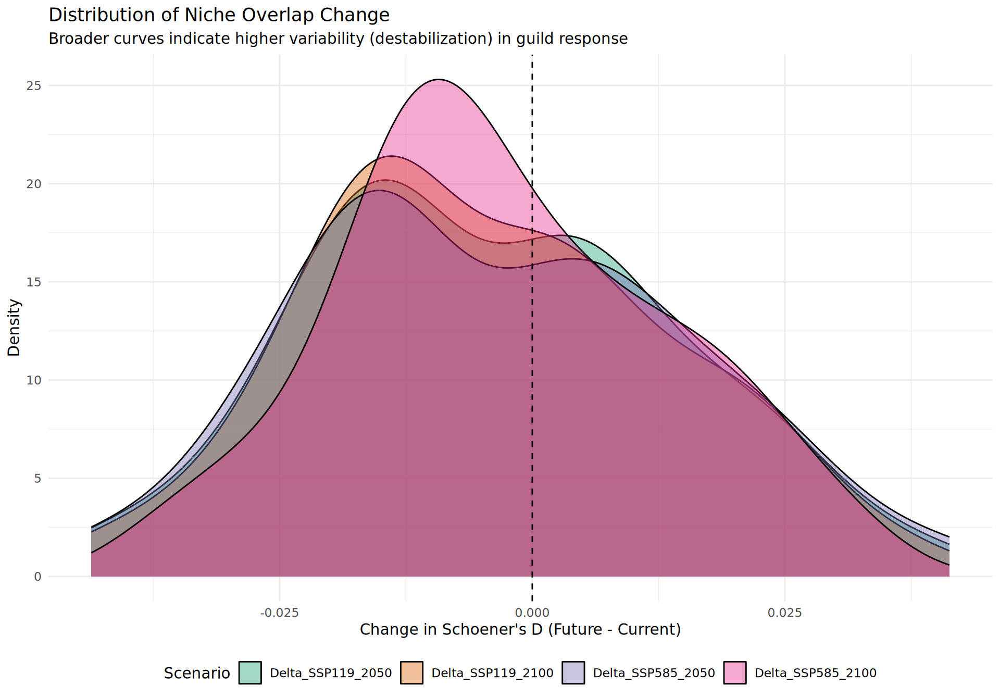
if (exists("figure_output_dir")) {ggsave(file.path(figure_output_dir, "variance_overlap_density.png"), p_var, width =8, height =6)}
Niche Overlap Change Histogram
library(ggplot2)library(dplyr)library(tidyr)cat("\n--- Generating Distribution of Overlap Changes (Sanity Check) ---\n")
--- Generating Distribution of Overlap Changes (Sanity Check) ---
# Ensure overlap_wide is available from the previous chunkif (!exists("overlap_wide") ||is.null(overlap_wide)) {stop("`overlap_wide` not found. Run 'sch-d-overlap-analysis' chunk first.")}# Calculate deltas (Current - Future)# Note: A negative result here means Future < Current (Loss of Overlap)plot_data_hist <- overlap_wide %>%mutate(delta_SSP119_2100 = ssp119_2100 - current,delta_SSP585_2100 = ssp585_2100 - current ) %>% dplyr::select(anemonefish_species, host_species, delta_SSP119_2100, delta_SSP585_2100) %>%pivot_longer(cols =starts_with("delta"), names_to ="Scenario_Raw", values_to ="Delta_D") %>%mutate(Scenario =case_when( Scenario_Raw =="delta_SSP119_2100"~"SSP1-1.9 (2100) - Low Emission", Scenario_Raw =="delta_SSP585_2100"~"SSP5-8.5 (2100) - High Emission" ) )# Create the histogramhist_plot <-ggplot(plot_data_hist, aes(x = Delta_D, fill = Scenario)) +geom_histogram(alpha =0.7, position ="identity", bins =30, color ="black") +geom_vline(xintercept =0, linetype ="dashed", size =1, color ="grey30") +facet_wrap(~Scenario, ncol =1) +scale_fill_manual(values =c("SSP1-1.9 (2100) - Low Emission"="forestgreen", "SSP5-8.5 (2100) - High Emission"="firebrick")) +labs(title ="Distribution of Changes in Niche Overlap (Future - Current)",subtitle ="Low emissions show consistent slight decline; High emissions show high variance.",x ="Change in Schoener's D (Negative = Loss of Overlap)",y ="Frequency (Number of Pairs)" ) +theme_bw(base_size =12) +theme(legend.position ="none",strip.text =element_text(face ="bold", size =11))print(hist_plot)
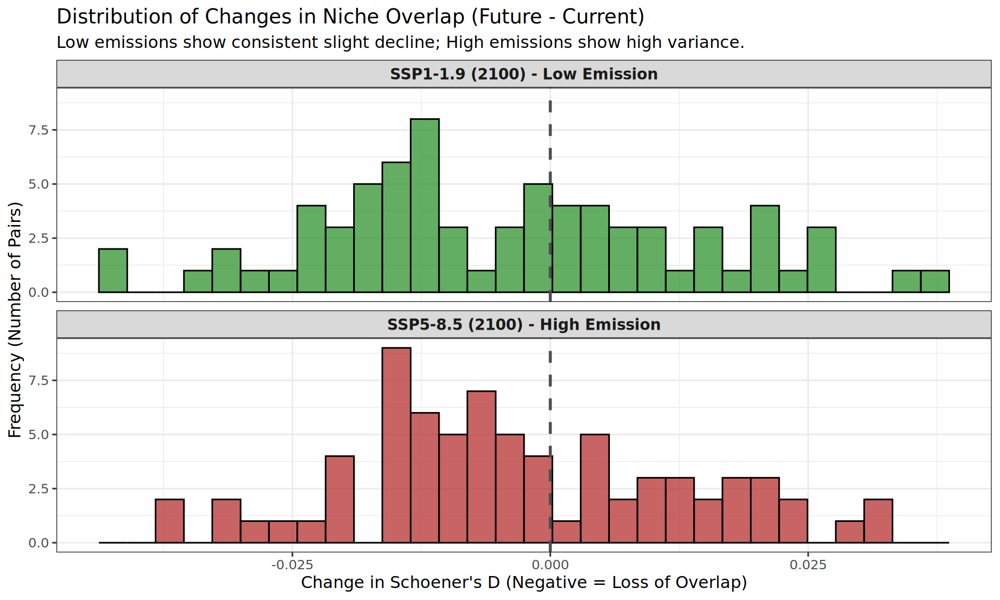
# Save the plotif (exists("figure_output_dir")) {ggsave(file.path(figure_output_dir, "Figure7_Overlap_Change_Histogram.png"), plot = hist_plot, width =8, height =6, dpi =300)cat("Saved histogram to Figure7_Overlap_Change_Histogram.png\n")}
Saved histogram to Figure7_Overlap_Change_Histogram.png
Relationship between Host and Anemonefish Richness (Current)
This section explores the relationship between the current predicted richness of host sea anemones and their mutualistic anemonefish (based on environmental-only models). We use variance partitioning to determine the independent and shared contributions of host richness and environmental factors (PCA components) to anemonefish richness.
# ADD NEW SAMPLING SACK HERElibrary(vegan) # For varpart and rda/anova.ccalibrary(dplyr)library(terra)if (is.null(host_richness_sum_cropped) ||is.null(fish_richness_sum_cropped) || (config$use_pca_predictors &&is.null(env_pca_current_cropped))) {cat("Warning: Necessary raster data is missing. Skipping variance partitioning.\n")} else {cat("--- Preparing Data for Variance Partitioning ---\n")# --- 1. Align and Stack Raster Layers --- layers_for_sampling <-c(host_richness_sum_cropped, fish_richness_sum_cropped)if (config$use_pca_predictors &&!is.null(env_pca_current_cropped)) {# Resample PCA layers if their geometry doesn't match the richness rastersif (!terra::compareGeom(layers_for_sampling[[1]], env_pca_current_cropped[[1]], stopOnError=FALSE)) {cat(" Resampling current PCA environmental layers to match richness map geometry...\n") env_pca_current_for_sampling <- terra::resample(env_pca_current_cropped, layers_for_sampling[[1]], method="bilinear") } else { env_pca_current_for_sampling <- env_pca_current_cropped } layers_for_sampling <-c(layers_for_sampling, env_pca_current_for_sampling[[1:config$n_pca_components]]) }# Rename layers for claritynames(layers_for_sampling)[1] <-"HostRichness"names(layers_for_sampling)[2] <-"AnemonefishRichness"if (config$use_pca_predictors) {names(layers_for_sampling)[3:nlyr(layers_for_sampling)] <-paste0("PC", 1:config$n_pca_components) }cat("Stack for sampling has layers:", paste(names(layers_for_sampling), collapse=", "), "\n")# --- 2. Sample Data from Rasters --- mask_all_valid <-sum(!is.na(layers_for_sampling)) ==nlyr(layers_for_sampling)if(global(mask_all_valid, "sum", na.rm=TRUE)$sum ==0) {cat("Error: No cells where all predictor layers have valid data.\n") } else {set.seed(123) # for reproducibility sampled_points <- terra::spatSample(mask_all_valid, 5000, method ="random", na.rm =TRUE, xy=TRUE, warn=FALSE) df_sampled_values <- terra::extract(layers_for_sampling, sampled_points[, c("x", "y")], ID =FALSE) %>%na.omit()cat("Sampled", nrow(sampled_points), "points, retaining", nrow(df_sampled_values), "complete cases for analysis.\n")# --- 3. Perform Variance Partitioning --- Y <- df_sampled_values$AnemonefishRichness X1 <- df_sampled_values %>% dplyr::select(HostRichness) X2 <- df_sampled_values %>% dplyr::select(starts_with("PC")) varpart_result <- vegan::varpart(Y, X1, X2)cat("\n--- Variance Partitioning Results ---\n")print(varpart_result)# --- 4. Test Significance of Unique Fractions using RDA/ANOVA ---cat("\n--- Significance Testing of Unique Fractions ---\n")# Test for fraction [a]: unique effect of Host Richnesscat("Testing unique contribution of Host Richness (Fraction [a])...\n") rda_a <- vegan::rda(Y ~ HostRichness +Condition(PC1 + PC2 + PC3 + PC4), data = df_sampled_values) anova_a <-anova.cca(rda_a, permutations =999)print(anova_a)# Test for fraction [b]: unique effect of Environmentcat("\nTesting unique contribution of Environment (Fraction [b])...\n") rda_b <- vegan::rda(Y ~ PC1 + PC2 + PC3 + PC4 +Condition(HostRichness), data = df_sampled_values) anova_b <-anova.cca(rda_b, permutations =999)print(anova_b)# --- 5. Visualize the Results ---cat("\n--- Plotting Variance Partitioning Diagram ---\n") varpart_plot_filename <-file.path(figure_output_dir, "variance_partitioning_richness_final.png")png(filename = varpart_plot_filename, width =800, height =600, res =100)par(mar =c(1, 1, 1, 1)) plot(varpart_result,Xnames =c("Biotic\n(Host Richness)", "Abiotic\n(Environment)"),bg =c("skyblue", "lightgreen"),main ="Variance Partitioning of Anemonefish Richness",cex =1.7, id.size =1)dev.off()# Display plot in R Markdownpar(mar =c(1, 1, 1, 1)) plot(varpart_result,Xnames =c("Biotic\n(Host Richness)", "Abiotic\n(Environment)"),bg =c("skyblue", "lightgreen"),main ="Variance Partitioning of Anemonefish Richness",cex =1.7, id.size =1)cat("Saved variance partitioning plot to:", varpart_plot_filename, "\n") }}
--- Preparing Data for Variance Partitioning ---
Stack for sampling has layers: HostRichness, AnemonefishRichness, PC1, PC2, PC3, PC4
Sampled 5000 points, retaining 3505 complete cases for analysis.
--- Variance Partitioning Results ---
Partition of variance in RDA
Call: vegan::varpart(Y = Y, X = X1, X2)
Explanatory tables:
X1: X1
X2: X2
No. of explanatory tables: 2
Total variation (SS): 39543
Variance: 11.285
No. of observations: 3505
Partition table:
Df R.squared Adj.R.squared Testable
[a+c] = X1 1 0.92674 0.92672 TRUE
[b+c] = X2 4 0.59582 0.59536 TRUE
[a+b+c] = X1+X2 5 0.94310 0.94302 TRUE
Individual fractions
[a] = X1|X2 1 0.34766 TRUE
[b] = X2|X1 4 0.01630 TRUE
[c] 0 0.57906 FALSE
[d] = Residuals 0.05698 FALSE
---
Use function 'rda' to test significance of fractions of interest
--- Significance Testing of Unique Fractions ---
Testing unique contribution of Host Richness (Fraction [a])...
Permutation test for rda under reduced model
Permutation: free
Number of permutations: 999
Model: rda(formula = Y ~ HostRichness + Condition(PC1 + PC2 + PC3 + PC4), data = df_sampled_values)
Df Variance F Pr(>F)
Model 1 3.9191 21357 0.001 ***
Residual 3499 0.6421
---
Signif. codes: 0 '***' 0.001 '**' 0.01 '*' 0.05 '.' 0.1 ' ' 1
Testing unique contribution of Environment (Fraction [b])...
Permutation test for rda under reduced model
Permutation: free
Number of permutations: 999
Model: rda(formula = Y ~ PC1 + PC2 + PC3 + PC4 + Condition(HostRichness), data = df_sampled_values)
Df Variance F Pr(>F)
Model 4 0.18465 251.57 0.001 ***
Residual 3499 0.64207
---
Signif. codes: 0 '***' 0.001 '**' 0.01 '*' 0.05 '.' 0.1 ' ' 1
--- Plotting Variance Partitioning Diagram ---
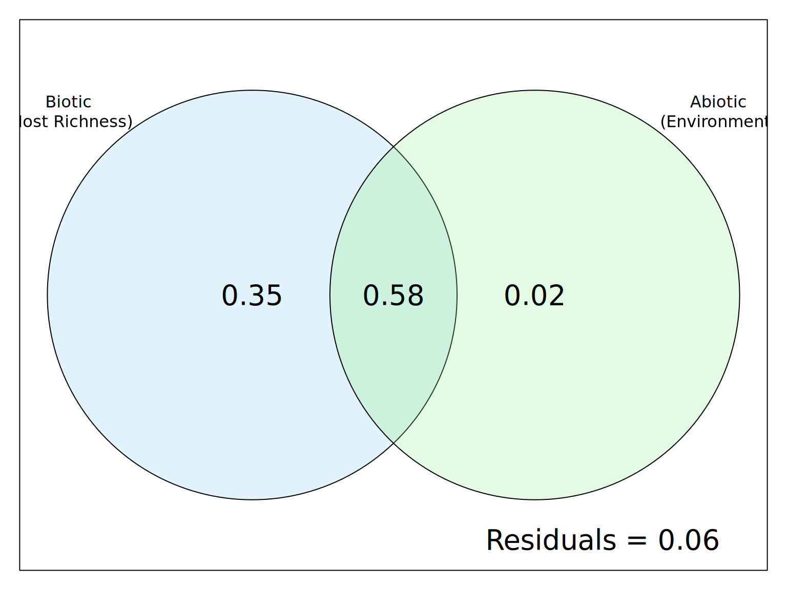
Saved variance partitioning plot to: /home/bi-server-kyoto/a0236995/sdm_anemonefish/figure_files/variance_partitioning_richness_final.png
Levin’s B Niche Breadth (Current Predictions)
This section calculates Levin’s B (\(B_2\)) niche breadth metric for each host sea anemone species and each anemonefish species (using their environmental-only model predictions for the current period). This metric quantifies the uniformity of a species’ predicted suitability across its range. We then compare the mean niche breadth between the two guilds.
library(ENMTools)library(dplyr)# Ensure the current individual prediction stacks are available and croppedif (is.null(host_pred_stack_cropped) ||!inherits(host_pred_stack_cropped, "SpatRaster")) {stop("`host_pred_stack_cropped` is not available or not a SpatRaster. Run previous chunks.")}if (is.null(fish_pred_stack_cropped) ||!inherits(fish_pred_stack_cropped, "SpatRaster")) {stop("`fish_pred_stack_cropped` (for combined fish models) is not available or not a SpatRaster. Run previous chunks.")}# --- 1. Calculate Niche Breadth for Host Sea Anemones ---cat("--- Calculating Levin's B Niche Breadth for Host Sea Anemones (Current) ---\n")
--- Calculating Levin's B Niche Breadth for Host Sea Anemones (Current) ---
Calculating breadth for anemonefish: Amphiprion_clarkii
Calculating breadth for anemonefish: Amphiprion_frenatus
Calculating breadth for anemonefish: Amphiprion_ocellaris
Calculating breadth for anemonefish: Amphiprion_perideraion
Calculating breadth for anemonefish: Amphiprion_polymnus
Calculating breadth for anemonefish: Amphiprion_sandaracinos
Calculating breadth for anemonefish: Amphiprion_akallopisos
Calculating breadth for anemonefish: Amphiprion_omanensis
Calculating breadth for anemonefish: Amphiprion_akindynos
Calculating breadth for anemonefish: Amphiprion_allardi
Calculating breadth for anemonefish: Amphiprion_barberi
Calculating breadth for anemonefish: Amphiprion_bicinctus
Calculating breadth for anemonefish: Amphiprion_chrysogaster
Calculating breadth for anemonefish: Amphiprion_chrysopterus
Calculating breadth for anemonefish: Amphiprion_ephippium
Calculating breadth for anemonefish: Amphiprion_fuscocaudatus
Calculating breadth for anemonefish: Amphiprion_latezonatus
Warning: Could not calculate breadth for fish Amphiprion_latezonatus : missing value where TRUE/FALSE needed
Calculating breadth for anemonefish: Amphiprion_latifasciatus
Calculating breadth for anemonefish: Amphiprion_leucokranos
Calculating breadth for anemonefish: Amphiprion_melanopus
Calculating breadth for anemonefish: Amphiprion_nigripes
Calculating breadth for anemonefish: Amphiprion_percula
Calculating breadth for anemonefish: Amphiprion_rubrocinctus
Calculating breadth for anemonefish: Amphiprion_sebae
Calculating breadth for anemonefish: Amphiprion_tricinctus
Calculating breadth for anemonefish: Premnas_biaculeatus
# --- 3. Compare Mean Niche Breadth (Levin's B2) ---if (nrow(host_niche_breadth_df) >1&&nrow(fish_niche_breadth_df) >1) {cat("\n--- Comparing Mean Niche Breadth (Levin's B2) between Guilds ---\n")if ("levins_B2"%in%names(host_niche_breadth_df) &&"levins_B2"%in%names(fish_niche_breadth_df)) { valid_hosts_b2 <- host_niche_breadth_df$levins_B2[!is.na(host_niche_breadth_df$levins_B2)] valid_fish_b2 <- fish_niche_breadth_df$levins_B2[!is.na(fish_niche_breadth_df$levins_B2)]if (length(valid_hosts_b2) >1&&length(valid_fish_b2) >1) { ttest_breadth_b2 <-t.test(valid_hosts_b2, valid_fish_b2)cat("Welch Two Sample t-test for Levin's B2 (Hosts vs. Fish Combined):\n")print(ttest_breadth_b2) } else {cat("Not enough valid B2 values for t-test after removing NAs.\n") }cat("\nStandard Deviation of Levin's B2:\n")cat(" Hosts:", sd(valid_hosts_b2, na.rm =TRUE), "\n")cat(" Anemonefish:", sd(valid_fish_b2, na.rm =TRUE), "\n") } else {cat("Levin's B2 column not found in one or both breadth data frames.\n") }} else {cat("Not enough data to compare niche breadths between hosts and anemonefish.\n")}
--- Comparing Mean Niche Breadth (Levin's B2) between Guilds ---
Welch Two Sample t-test for Levin's B2 (Hosts vs. Fish Combined):
Welch Two Sample t-test
data: valid_hosts_b2 and valid_fish_b2
t = 1.5624, df = 15.123, p-value = 0.1389
alternative hypothesis: true difference in means is not equal to 0
95 percent confidence interval:
-0.03757814 0.24448601
sample estimates:
mean of x mean of y
0.3192108 0.2157569
Standard Deviation of Levin's B2:
Hosts: 0.1821734
Anemonefish: 0.1632156
Niche Breadth vs. Suitability Shifts: A Comparative Analysis
This section explores the relationship between current environmental niche breadth (Levin’s B2) and projected mean suitability shifts under future climate scenarios. The analysis is performed separately for host sea anemones and for anemonefish. For anemonefish, a further distinction is made based on their host specialization (Generalist: >3 host species; Specialist: ≤3 host species) to investigate if the degree of host dependency influences their response patterns. Correlation tests are performed for each group and scenario, and the relationships are visualized to identify potential links between a species’ current niche characteristics and its vulnerability or resilience to environmental change.
# --- Load necessary libraries ---library(dplyr)library(tidyr)library(ggplot2)library(stringr)library(tibble)# --- Ensure prerequisite data is available ---if (!exists("host_niche_breadth_df") ||!exists("fish_niche_breadth_df")) {stop("Niche breadth data frames not found. Run the 'levin-b-niche-breadth' chunk first.")}if (!exists("suitability_shifts_list") ||length(suitability_shifts_list) ==0) {stop("`suitability_shifts_list` not found or empty. Run the 'calculate-suitability-shifts' chunk.")}if (!exists("anemonefish_specialization_df")) {stop("`anemonefish_specialization_df` not found. Run the specialization analysis chunk.")}cat("--- Correlating Niche Breadth with Future Suitability Shifts (Hypothesis 3) ---\n")
# --- 6. Create the Final Publication-Quality Plot ---final_plot <-ggplot(plot_data, aes(x = breadth_B2, y = suitability_shift, color = guild)) +geom_point(alpha =0.8, size =2.5) +geom_smooth(method ="lm", se =TRUE, aes(fill = guild), alpha =0.1) +facet_wrap(~ scenario_display, scales ="free_y") +geom_hline(yintercept =0, linetype ="dashed", color ="grey40") +labs(title ="Relationship Between Niche Breadth and Projected Suitability Shifts",subtitle ="Testing if broader niches are associated with greater resilience to climate change",x ="Current Environmental Niche Breadth (Levin's B2)",y ="Mean Change in Suitability (Future vs. Current)" ) +scale_color_manual(values =c("Anemonefish"="#d95f02", "Host Anemones"="#1b9e77"), name ="Guild") +scale_fill_manual(values =c("Anemonefish"="#d95f02", "Host Anemones"="#1b9e77"), name ="Guild") +theme_bw(base_size =12) +theme(legend.position ="bottom",strip.background =element_rect(fill ="grey90", color ="grey90"),strip.text =element_text(face ="bold"),plot.title =element_text(hjust =0.5, face ="bold"),plot.subtitle =element_text(hjust =0.5, size =10) )print(final_plot)
# Save the plotplot_filename <-file.path(figure_output_dir, "niche_breadth_vs_suitability_shift_all_scenarios.png")ggsave(plot_filename, plot = final_plot, width =11, height =8, dpi =300)cat("\nSaved final plot to:", plot_filename, "\n")
Saved final plot to: /home/bi-server-kyoto/a0236995/sdm_anemonefish/figure_files/niche_breadth_vs_suitability_shift_all_scenarios.png
Variable Importance Comparison
This section loads the variable importance (VI) scores from the environmental-only SDMs for host sea anemones and anemonefish. It then compares the importance of each environmental predictor (PCA components if used) between the two guilds.
library(dplyr)library(tidyr) # Not strictly needed for this chunk as is, but good to have if you modifylibrary(ggplot2)library(stringr) # For str_remove if needed in species_sanitized, though seems done by filenamelibrary(readr) # For read_csvlibrary(purrr) # For map_df# Determine predictor suffix used for the environmental-only modelsenv_model_predictor_suffix <-ifelse(config$use_pca_predictors, "_pca", "_vif")# --- Load Host Anemone Variable Importance ---cat("--- Loading Host Anemone Variable Importance ---\n")
--- Loading Host Anemone Variable Importance ---
# Original logic for finding host_vi_dir and host_vi_fileshost_vi_subdir_name <- config$model_output_subdir_map[[env_model_predictor_suffix]] %||%ifelse(config$use_pca_predictors, "anemone_pca", "anemone_vif")host_vi_dir_base <-file.path(config$target_vi_base, host_vi_subdir_name)host_vi_files <-list.files(path = host_vi_dir_base, pattern ="^VI_.*\\.csv$", full.names =TRUE)# Fallback if subdirectory structure is slightly different (e.g., .../anemone_pca/anemone_pca)if (length(host_vi_files) ==0&& env_model_predictor_suffix =="_pca") { host_vi_dir_alt <-file.path(config$target_vi_base, "anemone_pca") # Check one level up from expected subdir host_vi_files_alt_check <-list.files(path = host_vi_dir_alt, pattern ="^VI_.*\\.csv$", full.names =TRUE)if(length(host_vi_files_alt_check) >0) { host_vi_files <- host_vi_files_alt_checkcat(" Found host VI files in alternative directory:", host_vi_dir_alt, "\n") } else { # Check if it's nested further host_vi_dir_nested <-file.path(host_vi_dir_base, "anemone_pca") # Original had host_vi_dir/anemone_pca host_vi_files_nested_check <-list.files(path = host_vi_dir_nested, pattern ="^VI_.*\\.csv$", full.names =TRUE)if(length(host_vi_files_nested_check) >0) { host_vi_files <- host_vi_files_nested_checkcat(" Found host VI files in nested directory:", host_vi_dir_nested, "\n") } }}
Found host VI files in alternative directory: /home/bi-server-kyoto/a0236995/sdm_anemonefish/data/output/anemone_pca
if (length(host_vi_files) >0) { host_vi_data <- purrr::map_df(host_vi_files, ~readr::read_csv(.x, show_col_types =FALSE) %>%mutate(filename =basename(.x))) %>%mutate(species_sanitized =str_remove(str_remove(filename, "^VI_"), "\\.csv$"),guild ="Host Anemones"# Consistent naming with scale_fill_manual later ) %>%rename(Permutation_Importance = Importance) cat("Loaded VI data for", length(unique(host_vi_data$species_sanitized)), "host species.\n")} else {cat("Warning: No Variable Importance CSV files found for host anemones. Checked:", host_vi_dir_base, "and potential alternatives.\n") host_vi_data <-NULL}
fish_vi_subdir_name <- config$model_output_subdir_map[[env_model_predictor_suffix]] %||%ifelse(config$use_pca_predictors, "anemonefish_pca", "anemonefish_vif")fish_vi_dir_base <-file.path(config$target_vi_base, fish_vi_subdir_name)fish_vi_files <-list.files(path = fish_vi_dir_base, pattern ="^VI_.*\\.csv$", full.names =TRUE)if (length(fish_vi_files) ==0&& env_model_predictor_suffix =="_pca") { fish_vi_dir_alt <-file.path(config$target_vi_base, "anemonefish_pca") fish_vi_files_alt_check <-list.files(path = fish_vi_dir_alt, pattern ="^VI_.*\\.csv$", full.names =TRUE)if(length(fish_vi_files_alt_check) >0) { fish_vi_files <- fish_vi_files_alt_checkcat(" Found fish VI files in alternative directory:", fish_vi_dir_alt, "\n") } else { fish_vi_dir_nested <-file.path(fish_vi_dir_base, "anemonefish_pca") fish_vi_files_nested_check <-list.files(path = fish_vi_dir_nested, pattern ="^VI_.*\\.csv$", full.names =TRUE)if(length(fish_vi_files_nested_check) >0) { fish_vi_files <- fish_vi_files_nested_checkcat(" Found fish VI files in nested directory:", fish_vi_dir_nested, "\n") } }}
Found fish VI files in alternative directory: /home/bi-server-kyoto/a0236995/sdm_anemonefish/data/output/anemonefish_pca
if (length(fish_vi_files) >0) { fish_vi_data <- purrr::map_df(fish_vi_files, ~readr::read_csv(.x, show_col_types =FALSE) %>%mutate(filename =basename(.x))) %>%mutate(species_sanitized =str_remove(str_remove(filename, "^VI_"), "\\.csv$"),guild ="Anemonefish (Combined)"# Consistent naming ) %>%rename(Permutation_Importance = Importance) cat("Loaded VI data for", length(unique(fish_vi_data$species_sanitized)), "anemonefish (combined) species.\n")} else {cat("Warning: No Variable Importance CSV files found for anemonefish (combined). Checked:", fish_vi_dir_base, "and potential alternatives.\n") fish_vi_data <-NULL}
Loaded VI data for 27 anemonefish (combined) species.
# --- Combine and Compare VI ---if (!is.null(host_vi_data) &&!is.null(fish_vi_data) &&nrow(host_vi_data) >0&&nrow(fish_vi_data) >0) { combined_vi_data <-bind_rows(host_vi_data, fish_vi_data) %>%filter(!is.na(Permutation_Importance)) if (!"Variable"%in%names(combined_vi_data)) {stop("The 'Variable' column is missing from the loaded VI data. Check the output of SDMtune::varImp or your VI calculation script.") }cat("\nCombined VI data for comparison:\n")print(head(combined_vi_data))# Ensure guild is a factor for consistent plotting order and legend combined_vi_data$guild <-factor(combined_vi_data$guild, levels =c("Anemonefish (Combined)", "Host Anemones")) plot_vi_comparison <-ggplot(combined_vi_data, aes(x = Variable, y = Permutation_Importance, fill = guild)) +geom_boxplot(alpha =0.8, position =position_dodge(preserve ="single")) +labs(title ="Variable Importance Comparison between Guilds",x ="Predictor Variable (PCA Component)", # Clarified x-axisy ="Permutation Importance (%)" ) +scale_fill_manual(values =c("Host Anemones"="coral", "Anemonefish (Combined)"="steelblue"), name ="Guild") +# Matched factor levelstheme_bw(base_size =12) +theme(axis.text.x =element_text(angle =45, hjust =1), legend.position ="top")# Print plot to RMarkdown outputprint(plot_vi_comparison)# --- ADD THIS SECTION TO SAVE plot_vi_comparison ---# Ensure figure_output_dir is defined (should be from setup chunk)if (exists("figure_output_dir") &&dir.exists(figure_output_dir)) { vi_comparison_plot_filename <-file.path(figure_output_dir, "variable_importance_comparison_guilds.png")ggsave(filename = vi_comparison_plot_filename, plot = plot_vi_comparison, width =8, height =6, units ="in", dpi =300) # Adjust dimensions/dpi as neededcat("Saved variable importance comparison plot to:", vi_comparison_plot_filename, "\n") } else {cat("Warning: 'figure_output_dir' not defined or does not exist. Variable importance plot not saved to file.\n") }# --- END OF ADDED SECTION ---# Perform t-tests for each predictor variablecat("\n--- T-tests for difference in Variable Importance between Guilds ---\n") predictor_vars_to_test <-unique(combined_vi_data$Variable)for (var_name in predictor_vars_to_test) {cat(" Testing variable:", var_name, "\n") data_for_ttest <- combined_vi_data %>%filter(Variable == var_name)# Check if both guild levels are present with more than 1 observation each for the current variable guild_counts_for_var <- data_for_ttest %>%group_by(guild) %>%summarise(n_obs =n(), .groups ='drop') %>%filter(n_obs >1)if (nrow(guild_counts_for_var) ==2) { # Needs exactly two groups with >1 obs each ttest_vi_result <-tryCatch({t.test(Permutation_Importance ~ guild, data = data_for_ttest) }, error =function(e){cat(" Error in t-test for", var_name, ":", e$message, "\n"); NULL })if(!is.null(ttest_vi_result)) print(ttest_vi_result) } else {cat(" Skipping t-test for", var_name, "- insufficient data or only one guild present for this variable after filtering.\n")print(data_for_ttest %>%group_by(guild) %>%summarise(Count=n())) # Show counts for debugging } }} else {cat("Not enough variable importance data to compare between guilds.\n")}
Saved variable importance comparison plot to: /home/bi-server-kyoto/a0236995/sdm_anemonefish/figure_files/variable_importance_comparison_guilds.png
--- T-tests for difference in Variable Importance between Guilds ---
Testing variable: PC1
Welch Two Sample t-test
data: Permutation_Importance by guild
t = -3.0751, df = 34.118, p-value = 0.004126
alternative hypothesis: true difference in means between group Anemonefish (Combined) and group Host Anemones is not equal to 0
95 percent confidence interval:
-30.514988 -6.232419
sample estimates:
mean in group Anemonefish (Combined) mean in group Host Anemones
64.1963 82.5700
Testing variable: PC2
Welch Two Sample t-test
data: Permutation_Importance by guild
t = 1.3376, df = 33.688, p-value = 0.19
alternative hypothesis: true difference in means between group Anemonefish (Combined) and group Host Anemones is not equal to 0
95 percent confidence interval:
-3.265165 15.826646
sample estimates:
mean in group Anemonefish (Combined) mean in group Host Anemones
16.54074 10.26000
Testing variable: PC4
Welch Two Sample t-test
data: Permutation_Importance by guild
t = 1.3099, df = 33.684, p-value = 0.1991
alternative hypothesis: true difference in means between group Anemonefish (Combined) and group Host Anemones is not equal to 0
95 percent confidence interval:
-2.016450 9.322376
sample estimates:
mean in group Anemonefish (Combined) mean in group Host Anemones
8.862963 5.210000
Testing variable: PC3
Welch Two Sample t-test
data: Permutation_Importance by guild
t = 2.3588, df = 28.522, p-value = 0.02541
alternative hypothesis: true difference in means between group Anemonefish (Combined) and group Host Anemones is not equal to 0
95 percent confidence interval:
1.118441 15.788966
sample estimates:
mean in group Anemonefish (Combined) mean in group Host Anemones
10.4037 1.9500
Variance & Destabilization
# --- 5. Analysis of Response Heterogeneity (Variance of Delta D) ---cat("\n--- Analyzing Variance of Overlap Change (Non-Linear Response) ---\n")
--- Analyzing Variance of Overlap Change (Non-Linear Response) ---
Spatial visualization of lost habitat and test of specialization effect.
# 2. Specialist Trap Testif(exists("anemonefish_specialization_df")) { brake_analysis_df <- brake_results %>%left_join(anemonefish_specialization_df, by ="species") %>%filter(!is.na(specialization_type))# Visualization p_guild <-ggplot(brake_analysis_df, aes(x = specialization_type, y = biotic_brake, fill = specialization_type)) +geom_boxplot(alpha =0.7) +geom_jitter(width =0.2) +labs(title ="Biotic Brake by Guild", x ="Guild", y ="Range Loss (km)") +theme_bw() +theme(legend.position ="none")print(p_guild)# Statistical Testprint(t.test(biotic_brake ~ specialization_type, data = brake_analysis_df))if (exists("figure_output_dir")) {ggsave(file.path(figure_output_dir, "Figure11_Brake_vs_Specialization.png"), p_guild, width =6, height =6) }}
Welch Two Sample t-test
data: biotic_brake by specialization_type
t = 0.66738, df = 8.9483, p-value = 0.5214
alternative hypothesis: true difference in means between group Generalist and group Specialist is not equal to 0
95 percent confidence interval:
-265.5847 487.5889
sample estimates:
mean in group Generalist mean in group Specialist
351.7483 240.7462
Spatial visualization of lost habitat and test of specialization effect.